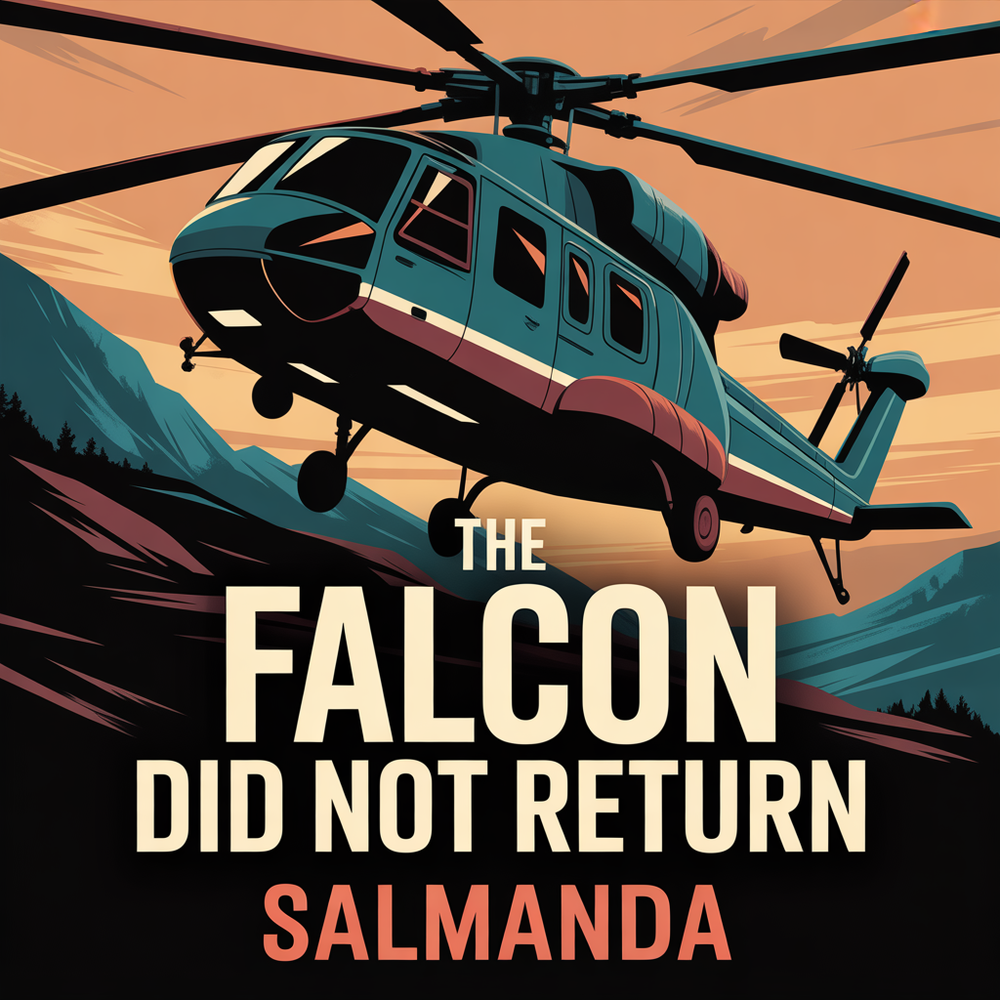
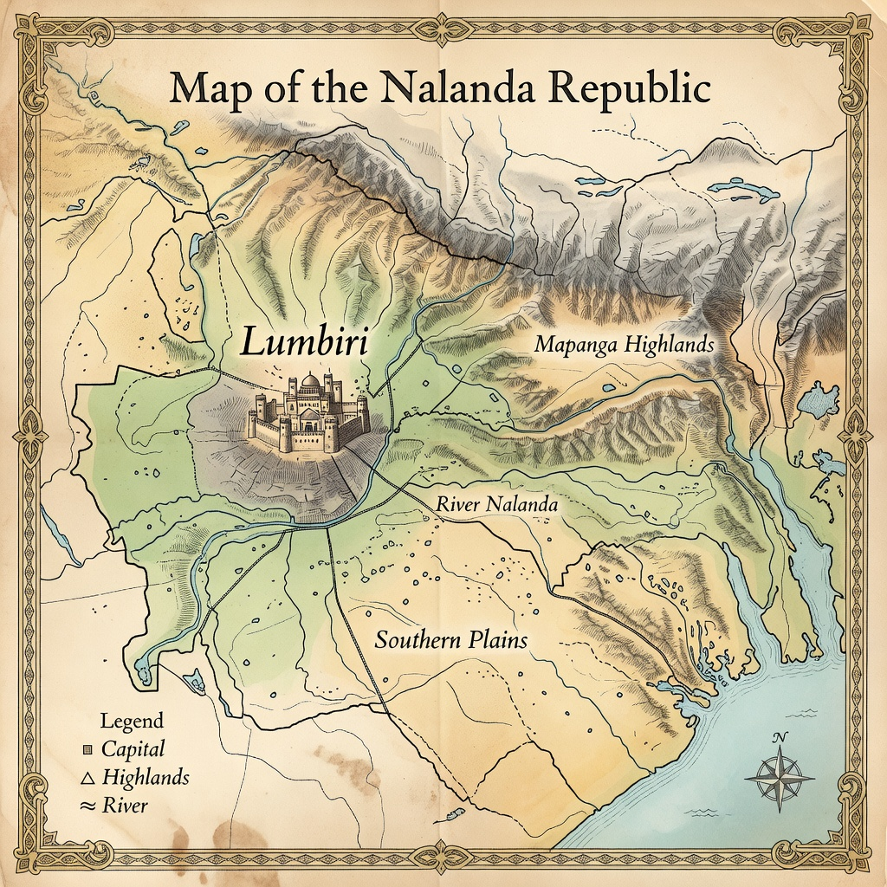

<!DOCTYPE html>
<html lang="en">
<head>
  <meta charset="UTF-8" />
  <meta name="viewport" content="width=device-width, initial-scale=1.0" />
  
   	<meta name="keywords" content="The Falcon Did Not Return, Political Thriller, Political Fiction, African Politics"/>

<meta name="Author" content="Salmanda"/> 

<meta name="revised" content="Profiler, 1/2/2026"/>
 
  <meta http-equiv="X-UA-Compatible" content="IE=EmulateIE7"/>
    
    <meta name="mobile-web-app-capable" content="yes"/>
    
    <meta name="apple-mobile-web-app-capable" content="yes"/>
    
    <meta name="msapplication-starturl" content=""/>
    
     <meta name="robots"
content="noindex,nofollow"/> 
    
    <meta name="theme-color" content="teal"/> 
  
  <link rel="icon" type="image" href="TheFalcon.png"/>
  
  <title>The Falcon Did Not Return</title>
  <style>
    :root {
      --accent: teal;
      --accent-dark: #0b6abf;
      --muted: orange;
      --bg: lightgray;
      --radius: 12px;
      --shadow: 0 6px 18px rgba(16,24,40,0.08);
    }

    * {
    	 box-sizing: border-box; margin: 0; padding: 0;
    	  }
    	  
    body {
      font-family: georgia;
      padding: 1px;
      background: var(--bg);
      color: #111;
      line-height: 1.5;
      text-align:center;
      margin-top:5px;
    }
    
    .nav-inner {
      max-width: 1100px;
      margin: auto;
      padding: 15px;
      display: flex;
      align-items: center;
      justify-content: space-between;
    }

    .brand {
      display: flex;
      align-items: center;
      gap: 10px;
    }

    .logo {
      background: var(--accent);
      color: #fff;
      font-weight: bold;
      font-size: 20px;
      padding: 10px 14px;
      border-radius: var(--radius);
      border: 1px solid orange;
    }

    nav ul {
      display: flex;
      list-style: none;
      gap: 5px;
    }

    nav a {
      text-decoration: none;
      color: var(--muted);
      padding: 8px 10px;
      border-radius: 6px;
      border: 1px solid orange;
      background: gray;
      font-size: 10.5px;
    }

    nav a:hover {
      background: var(--accent);
      color: #fff;
    }

    .cta {
      background: var(--accent);
      color: orange;
      text-decoration: none;
      padding: 8px 14px;
      border-radius: 6px;
      font-weight: bold;
      border: 1px solid orange;
    }

    /* Hero */
    .hero {
      max-width: 1100px;
      margin: 40px auto;
      padding: 2px;
      display: grid;
      grid-template-columns: 1fr 1fr;
      gap: 20px;
      align-items: center;
    }

    .hero h1 {
      font-size: 32px;
      margin-bottom: 10px;
    }
 
    .hero p {
      color: var(--muted);
      margin-bottom: 20px;
    }

    .hero img {
      width: 100%;
      border-radius: var(--radius);
      box-shadow: var(--shadow);
    }

    @media (max-width: 800px) {
      .hero {
        grid-template-columns: 1fr;
      }

    section {
      max-width: 1100px;
      margin: 10px auto;
      padding: 0 10px;
    }

    h2 {
      margin-bottom: 10px;
      color: teal;
    }
    
    h6{
    	color: orange;
    	font-size: 12px;
    	border: 1px solid orange;
    	border-radius: 4px;
    	background: teal
    }
    
    i{
    	font-weight: bold;
    	color: black;
    	text-shadow: 1px 1px 2px teal;
    }
    
    p{
    	color: black;
    	text-shadow: 1px 0px 0px teal;
    	font-size: 16px;
    }

    .card {
      background: teal;
      border-radius: var(--radius);
      padding: 15px;
      box-shadow: var(--shadow);
      border: 1px solid orange;
      color: orange;
    }

    form {
      display: grid;
      gap: 10px;
    }

    input, textarea {
      padding: 10px;
      border-radius: var(--radius);
      border: 1px solid teal;
      width: 100%;
      background: orange;
    }

    button {
      background: var(--accent);
      color: orange;
      border: none;
      padding: 10px;
      border-radius: var(--radius);
      cursor: pointer;
      border: 1px solid orange;
    }

    footer {
      background: teal;
      color: orange;
      text-align: center;
      padding: 20px;
      margin-top: 40px;
      border: 1px solid orange;
      border-radius: 6px;
    }
    
    .picturee{
width: 70px;
height: 70px;
border: 1px solid orange;
border-radius: 35px;
padding: 1px;
margin-top: 6px;
}

/*floating button css*/
    .floating-btn {
      position: fixed;
      bottom: 5px;
      right: 5px;
      background-color:teal;
      color: white;
      border: solid orange 1px;
      border-radius: 50%;
      width: 40px;
      height: 40px;
      font-size: 12px;
      cursor: pointer;
      box-shadow: 0 4px 8px rgba(0,0,0,0.3);
      z-index: 1000;
      transition: background-color 0.3s; 
    }  

    .floating-btn:hover {
      background-color: orange;
    }
    /*end floating button css*/
      
      .safetyTips{
border: solid orange 1px;
border-radius: 4px;
background: gray;
margin: 10px;
font-size: 15px;
text-align: left;
padding: 3px;
}

/* Overlay background */
    .overlay {
      display: none;
      position: fixed;
      top: 0; left: 0;
      width: 100%; height: 100%;
      background: rgba(0, 0, 0, 0.5);
    }

/* Alert box css*/
    .alert-box {
      background: lightgray;
      width: 300px;
      padding: 20px;
      margin: 100px auto;
      text-align: center;
      border-radius: 5px;
      border: 1px solid orange;
    }
    /* End alert box css*/
  </style>
</head>
<body>
    <nav>
        <ul>
        &nbsp; <li><a onclick="color(this); home();">🏡 Home</a></li>
        
          <li><a onclick="color(this); ebookStore();" >📚 E-Book Store</a></li>
          
          <li><a onclick="color(this); vlibrary();">📖 Library</a></li>
          
          <li><a style="color: orange;" onclick="color(this);" href="#contact">✉ Messages</a></li>
        </ul>
      </nav>
      
      <!--custom alert-->
  <div class="overlay" id="alertOverlay">
    <div class="alert-box">
      <h6>How to get a copy of this e-Book</h6><br>
      <p style="background: teal; color: orange; border-radius: 4px; font-size: 14px; border: 1px solid orange;">To get a copy of this e-Book you only need to send k2000, to +265(0)982177920, then a download link will be sent to you or you can get the copy via whatsapp by sending a message below, either way you choose. Your support will be highly appriciated, as it will help in the continual development of Africa Online</p><br>
     
      <button onclick="closeAlert()">OK</button>
    </div>
  </div>
  <!--end custom alert-->
  
  <section class="hero">
    <div>
      <h1 style="color: maroon"><u>THE FALCON DID NOT RETURN</u></h1>
    </div>
    
    
    <button id="shbtn12">📄 Foreword</button>
    <div class="safetyTips" id="d12" style="display:none;">
        <p style="color: black">
        	<i>THE FALCON DID NOT RETURN</i><br>
Salmanda<br>
When the Deputy Head of State's aircraft disappears without a distress call, the nation is told to wait.
To trust. To accept. To move on.
Investigative journalist Jonas Mwale is not convinced.
As official statements grow vaguer and timelines begin to shift, Jonas uncovers inconsistencies buried beneath controlled narratives and deliberate silence. Inside government, analyst Miriam Kaseko watches the same truth being quietly boxed in logs altered, searches delayed, questions discouraged.
Working from opposite sides of power, they trace a hidden pattern of decisions that leads far beyond a single flight.
<i>The Falcon Did Not Return</i> is a gripping political thriller inspired by real events an unflinching exploration of truth, secrecy, and the human cost of silence. It asks a haunting question:
What happens when a nation is told not to look too closely?
Bold, unsettling, and deeply human, this novel is a story of courage, accountability, and the echoes that remain when the truth finally surfaces.<br><br>
	
	<i>Disclaimer</i><br>
This is a complete work of fiction.
While the novel is inspired by real-world events and circumstances, all characters, dialogue, timelines, institutions, and actions portrayed in this book are fictionalized. Any resemblance to actual persons, living or deceased, or to real events is purely coincidental.
The author makes no claim that the events depicted represent factual accounts, official investigations, or verified conclusions. This work is intended solely as a fictional narrative exploring themes of truth, power, accountability, and human response to crisis.<br>
The Republic of Nalanda is a fictional nation.
Any resemblance to real countries, institutions, or events is coincidental.
<br><br>
        	
    <i>THE FALCON DID NOT RETURN</i><br>
&copy 2026 Salmanda<br>
All rights reserved.
No part of this book may be reproduced, stored in a retrieval system, or transmitted in any form or by any means electronic, mechanical, photocopying, recording, or otherwise without the prior written permission of the author, except for brief quotations in reviews.
</p></div>

<!--<a href="https://smtechnology133.github.io/StoryBook/TheFalconDidNotReturn.pdf" download></a>

<a href="https://smtechnology133.github.io/StoryBook/TheFalconDidNotReturn.zip" download></a>-->
    
    <button onclick="showAlert()">Download Book</button>
  </section>
  <hr>

      <button id="shbtn2">📄 Main Characters in the story</button>
       <div class="safetyTips" id="d2" style="display:none;">
        <p>
<i>1. Kalisto Chirwa</i><br>
Role: Deputy Head of State<br><br>
	
Age: Late 40s<br>
Traits: Intelligent, disciplined, reform-minded, quietly stubborn<br><br>
	
Arc: A man caught between loyalty to the system and his belief that it can be better<br>
Symbolism: Hope that unsettles those who profit from stagnation<br><br>
        	
<i>2. Jonas Mwale Investigative Journalist</i><br>
        		
Role: Main protagonist<br> 
Leads the public investigation from outside government.<br><br>
	
Age: 36<br>
Background: Experienced journalist,<br>
Formerly exposed corporate corruption.<br>
Lost credibility once due to a story blocked by authorities.<br> 
Highly meticulous and cautious.<br><br>
	
Personality Traits:<br>
Analytical and methodical<br>
Persistent, patient, and fearless when uncovering truth<br>
Skeptical, suspicious of authority<br>
Occasionally emotionally guarded due to past failures<br><br>
	
Motivations:<br>
Expose the truth behind the Falcon disappearance<br>
Prevent systemic abuse and cover-ups<br>
Redemption for previous blocked investigations<br><br>

<i>3. Miriam Kaseko</i><br>
Government Analyst / Insider<br><br>
	
Role: Jonas's inside collaborator;<br>
Provides access to internal logs, communications, and authorization chains.<br><br>
	
Age: 33<br>
Background: Mid-level analyst in Ministry of Defense;<br>
skilled in digital security, access logs, and internal communications.<br>
Quietly ethical, but forced to navigate bureaucracy carefully.<br><br>
	
Personality Traits:<br>
Highly intelligent and observant<br>
Calm under pressure<br>
Ethical and determined to act despite risk<br>
Cautious with trust; must maintain cover inside government<br><br>
	
Motivations:<br>
Expose internal manipulation and delays<br>
Protect integrity of government systems<br>
Avoid personal harm while aiding Jonas<br><br>

<i>4. General Ruben Kunda</i><br>
High-Level Official<br><br>
	
Role: Antagonist;<br> 
key figure responsible for delays and narrative control surrounding Falcon disappearance.<br><br>
	
Age: 58<br>
Background: Long-standing career in military and government administration.<br> 
Controls multiple access points and decision chains.<br><br>
	
Personality Traits:<br>
Strategic and calculating<br>
Authoritative, manipulative, and accustomed to secrecy<br>
Protects reputation and power above all else<br>
Charismatic in public, ruthless in private<br><br>
	
Motivations:<br>
Maintain government and personal control<br>
Protect reputation and avoid accountability<br>
Suppress narratives that expose negligence or manipulation<br><br>
	
<i>5. Daniel Phiri</i><br>
Role: Air Traffic Control Officer<br><br>
	
Traits: Observant, cautious, underestimated<br>
	
Arc: The first person to notice that something is wrong<br>
Strength: Small details others dismiss<br><br>
	
<i>6. Supporting Characters</i><br><br>
	
<i>A. Aviation Controllers (Mid-Level Officials)</i><br>
Handle daily flight operations<br>
Initially complicit or manipulated<br>
Some eventually defect, providing corroboration to Jonas and Miriam
<br><br>
	
<i>B. Journalists / Media Contacts</i><br>
Trusted contacts receive encrypted evidence from Jonas<br>
Disseminate staggered information to the public<br>
Face government pressure, intimidation, and ethical decisions<br><br>
	
<i>C. MPs and Opposition Members</i><br>
Push for transparency in Parliament<br>
Represent public pressure, media scrutiny<br>
Some align strategically with truth-seekers, others shield officials<br><br>
	
<i>D. Citizens / Protest Leaders</i><br>
Amplify public awareness<br>
Social media campaigns force governmental reaction<br>
Serve as the societal mirror reflecting accountability
        </p>
        </div>
        	
     <h2><u>CHAPTERS 📖</u></h2>
        	
      <button id="shbtn3">Chapter One</button>
      
      	 <div class="safetyTips" id="d3" style="display:none;">
        <p><i>The Sky That Refused to Answer</i><br>
        	
The State Falcon lifted from the capital just after dawn, its engines cutting through the cool air with a restrained authority that matched the man seated behind the cockpit door.
Kalisto Chirwa did not like flying in small aircraft. He trusted systems, procedures, numbers but he distrusted luck. Still, this trip could not be postponed. Not again.
From thirty thousand feet, the Nalanda Republic looked peaceful. Rivers like silver threads. Hills softened by mist. A country that appeared calm when viewed from above, even as it argued with itself below.
Chirwa loosened his seatbelt slightly and glanced at his phone. No signal, as expected. The pilot had warned them before takeoff: patchy coverage beyond the plateau, worsening weather near the Mapanga Highlands. Standard stuff. Manageable.
"Forty-five minutes," the pilot had said. "An hour at most."
Chirwa had nodded. He always nodded. Listening was his strength. Silence, too.
Across from him sat Memory Dimba, his chief legal adviser, reviewing a folder she had already memorized. Two rows behind them, security officers spoke in low tones, their words swallowed by the hum of the engines. No laughter. No jokes. The mood was restrained, professional yet something hung in the air, unnamed.
Chirwa stared out the window.
Dark clouds were forming ahead, rising faster than expected. Not violent yet, but organized. Purposeful.
He thought of the call he had received the night before.
"Sir, maybe postpone."
"Postpone what?"
"Everything."
The caller had not given a name.
At 07:18, the Falcon adjusted altitude.
At 07:21, the co-pilot requested updated weather data.
There was no response.
At 07:26, the cockpit radio crackled not with instructions, but with static.
A long, patient static.
Chirwa leaned forward slightly, instinctively. He had spent enough time around pilots to know the difference between routine turbulence and uncertainty. This was the latter.
"Is everything alright?" Memory asked.
Before anyone could answer, the aircraft jolted not violently, but enough to command attention.
Then the cabin lights flickered.
Not off. Just... uncertain.
At ground control, an air traffic officer named Daniel Phiri frowned at his screen.
The Falcon's transponder signal wavered, then reappeared a few kilometers off its expected track. Not unheard of in the highlands, but unusual for a military-grade aircraft.
Phiri adjusted his headset.
"State Falcon, confirm heading."
Nothing.
He tried again.
Still nothing.
By 07:34, the Falcon had vanished from radar.
No mayday.
No distress signal.
No final transmission.
Just absence.
By mid-morning, rumors had begun.
By afternoon, officials were "awaiting confirmation."
By evening, the nation was holding its breath.
And somewhere in Mapanga Highlands, the hills stood quietly keeping their secret.<br><br>

<i>The Silence After Radar</i><br>
Jonas Mwale was halfway through a cold cup of tea when the newsroom televisions went quiet.
Not off just muted. The screens still showed the same looping footage: the presidential seal, the air force hangar, a wide shot of clouds drifting over the Mapanga Highlands. But the presenters had lowered their voices, as if the volume itself might be inappropriate.
That was when Jonas knew.
He stood up slowly, walked closer to the largest screen, and read the caption again.
<i>STATE AIRCRAFT UNACCOUNTED FOR</i>
Unaccounted for was a word governments used when they wanted time. It bought hours. Sometimes days.
Sometimes forever.
"Jonas," the editor said behind him, "don't start."
"I haven't said anything," Jonas replied.
"You're about to."
The editor old, careful, permanently exhausted rubbed his forehead. "We wait for the briefing. We don't speculate."
Jonas nodded. He always nodded. Like Kalisto Chirwa, he listened well.
But he also remembered patterns.
He returned to his desk and opened a blank document. He did not title it The Crash or The Missing Aircraft. He titled it:
<i>Timeline</i>
At 07:34, the Falcon disappeared from radar.
At 08:10, the Civil Aviation Authority issued no alert.
At 09:00, state radio continued normal programming.
That gap bothered him.
Jonas picked up his phone and dialed a number he hadn't used in months.
"Daniel," he said when the line connected. "It's Jonas."
A pause. Breathing. Static in the background.
"I can't talk," Daniel Phiri said.
"You already are."
Another pause.
"I didn't lose it," Daniel said quietly. "It didn't drift. It didn't fade."
"What did it do?"
"It jumped," Daniel replied. "Just slightly. Like someone nudged it."
Jonas closed his eyes.
"Then it was gone."
"Any mayday?"
"No."
"Any handover?"
"No."
Daniel exhaled. "Jonas... they told us to log it as weather interference."
Jonas typed that sentence exactly as spoken.
<i>They told us.</i>
"Who is they?" Jonas asked.
But the line went dead.
By midday, the first official statement arrived.
<i>Due to adverse weather conditions, communication with the State Falcon has been temporarily lost. Search operations are being coordinated.</i>
Jonas printed it out and placed it beside his timeline.
Weather, again.
He pulled archived reports from his drawer previous aviation incidents, old crash investigations, parliamentary inquiries that ended with phrases like lessons were learned and moving forward.
Every one of them had started the same way.
Weather.
Confusion.
Delay.
At 14:40, a second statement clarified that the aircraft was "likely down."
<i>Likely.</i>
Jonas noticed something else.
The military had not yet released the flight manifest.
He stood and walked straight back to the editor's office.
"They're late," Jonas said.
"They're grieving," the editor replied.
"They're controlling," Jonas said softly.
The editor looked up. "Be careful."
"I am."
That afternoon, Jonas drove toward the air force base not to enter, but to watch. There were no ambulances leaving. No aircraft taking off. Just guards. More than usual.
A woman stood near the gate holding a phone, crying quietly. Jonas didn't approach her. He wrote her down instead.
<i>Civilian present. No press briefing.</i>
By evening, the nation had moved from confusion to prayer.
Churches filled. Candles appeared. Social media overflowed with photos of Kalisto Chirwa smiling, waving, listening.
Jonas stayed at his desk.
At 21:13, an anonymous email arrived.
<i>SUBJECT: Don't Trust the Clock
<br>BODY:
Compare the military log with civil aviation time stamps. Someone adjusted something. Ask why the search waited for daylight.</i>
Jonas didn't forward it.
He didn't reply.
He opened a new document and typed a single sentence:
<i>The Falcon did not return but the silence arrived first.</i>
Outside, the city was quiet in the way that only fear produces. Not panic. Not yet. Just a collective holding of breath.
Jonas saved his files twice.
Then he turned off his phone.
He had learned long ago: the truth does not arrive loudly.
It waits.<br><br>


<i>A Nation Waits</i><br>
By morning, Nalanda Republic had decided how to feel.
Black ribbons appeared on radio logos. Somber music replaced call-in shows. The Deputy Head of State's portrait solemn, eyes lowered filled the front pages before noon. The word <i>unaccounted</i> was quietly retired and replaced with <i>tragic.</i>
Still, no bodies.
Still, no wreckage.
Jonas stood in line at the bakery near his flat, listening.
"O! what a pitty he was such a humble man," the woman ahead of him said.
"They say the weather was bad," another replied.
"We must keep on praying," someone added, ending the conversation neatly.
Prayer was safe. Questions were not.
Outside Parliament, a crowd gathered, not to protest but to wait. They held candles in daylight, unsure what else to do with their hands. A choir began to sing, softly at first, then louder as if volume might summon answers.
On the steps above them, uniformed officers stood evenly spaced, eyes forward. Not tense. Practiced.
Inside the State House, control was being mistaken for calm.
Jonas knew the difference because he had seen it before.
Seven years earlier, when the river bridge collapsed in Kachere District, killing thirty two people, the same choreography had played out. First the hymns. Then the committee. Then the report that explained nothing and named no one.
Jonas had written about that bridge.
He had also written about the engineer who warned it would fail.
The engineer was his brother.
Officially, the bridge collapsed due to unforeseeable structural stress.
Unofficially, Jonas had been advised kindly to stop digging.
He stopped writing for almost a year after that.
Not because he was afraid, but because grief rearranges your sense of usefulness. It convinces you that silence is maturity.
Until it no longer isn't.
At noon, the President addressed the nation.
Jonas watched from the newsroom, arms folded, eyes fixed not on the man's face but on the phrasing.
<i>"We will leave no stone unturned."
"We ask for patience."
"We must not politicize tragedy."</i>
There it was.
<i>Do not politicize meant: do not ask who was responsible.
Patience meant: forget.</i>
The President announced a commission of inquiry before any wreckage had been officially located.
Jonas wrote in the margin of his notebook:
<i>Outcome decided before evidence.</i>
Outside, mourners applauded the speech.
They wanted reassurance. They wanted to believe that order still existed.
Jonas didn't blame them.
At the Civil Aviation Authority, doors remained closed. At the military base, journalists were kept behind barricades "for their own safety." A map circulated on state television showing a wide, vague search area large enough to hide incompetence, small enough to look decisive.
By afternoon, a list of names was finally released.
Jonas read them slowly.
Not just officials.
Not just security.
A driver.
An aide.
A flight attendant.
People whose stories would not be told.
He thought of Memory Dimba, whose articles he had once admired when she was still a law lecturer. Thought of Daniel Phiri, now surely pretending nothing unusual had happened.
At 16:08, Jonas received a text from an unknown number.
<i>They're controlling the sky and the story. Choose carefully.</i>
Jonas deleted it.
Not because he dismissed it but because he memorized it.
As evening fell, candlelight spread across the city. Television anchors spoke of unity. Churches filled again. The word hero was repeated often, like a spell.
Jonas walked home instead of driving.
He passed a group of university students holding a handmade sign, with the words:
<i>TRUTH IS ALSO RESPECT</i>
Two plain clothes officers watched them from across the road.
Jonas met one officer's eyes.
The officer looked away first.
At home, Jonas opened the old folder he rarely touched.
Inside was a photo of the Kachere Bridge, cracked and sagging, taken weeks before it collapsed. On the back, his brother's handwriting:
<i>They know. They just don't want to pay.</i>
Jonas placed the photo beside his laptop.
He opened a new document.
This time, he titled it:
<i>THE WAIT</i>
He knew what it would cost him.
Access.
Safety.
Friends who would stop answering calls.
Possibly worse.
But he also knew what silence cost.
Outside, the nation waited patient, prayerful, obedient.
Inside, the story was already being written.
Jonas intended to interrupt it.<br><br>


<i>The First Official Statement</i><br>
The statement was released at exactly 10:00 a.m.
Not 09:58.
Not 10:03.
Ten o'clock carried the authority of planning.
Miriam Kaseko recognized it immediately the timing, the spacing, the careful neutrality of the font. She had helped draft enough of them in her career to know when a document was meant to inform and when it was meant to conclude something before it had begun.
She read it once without emotion.
Then again, slowly.
<i>The Government of the Nalanda Republic regrets to confirm that the State Falcon, carrying senior government officials, is believed to have been involved in an incident in the Mapanga Highlands. Preliminary assessments indicate adverse weather as a significant factor. A multi-agency task force has been constituted to investigate the circumstances surrounding the incident.</i>
Believed.
Incident.
Circumstances.
Miriam closed her eyes.
No mention of time of disappearance.
No explanation for the delay in the search.
No reference to communication failure.
No confirmation of wreckage.
Most importantly no commitment to independence.
She looked around the Cabinet briefing room. Ministers sat in disciplined silence, hands folded, eyes trained on the table or the ceiling. No one asked questions anymore. Questions had a way of lingering.
At the head of the table, the President adjusted his cufflinks.
"We must speak with one voice," he said calmly. "This nation needs reassurance."
Reassurance, Miriam thought, was being confused with certainty.
"The language is... premature," she said, choosing each word as if it might be recorded. "We are asserting conclusions before evidence is recovered."
The room did not react.
The Minister of Information smiled faintly. "The public expects clarity."
"The public expects truth," Miriam replied.
A pause.
Not hostile. Not supportive. Just long enough to remind her where she was.
"The investigation will provide that," the President said. "In time."
Miriam looked back at the statement.
Adverse weather as a significant factor.
She had reviewed the meteorological data herself. There had been cloud cover, yes. Variable visibility. But nothing extraordinary. Nothing that justified the absence of contingency planning.
Weather was being used not as explanation but as permission.
Permission not to look further.
Across the city, Jonas Mwale printed the statement and laid it beside the others on his desk.
He circled words in red.
<i>Believed: uncertainty framed as conclusion,
Incident: avoids responsibility,
Preliminary:  without data,
Task force: internal</i>
He whispered the sentence aloud, testing it.
"Adverse weather as a significant factor."
Factor in what?
He pulled out aviation guidelines from the Civil Aviation Authority public documents no one bothered to read unless something went wrong.
<i>Standard protocol required:
Immediate search initiation
Dual-agency coordination
Transparent logging of flight data</i>
None of that had happened.
Jonas underlined multi-agency and wrote in the margin:
<i>Same agencies. Same chain of command.</i>
Back in the briefing room, Miriam watched the statement go live on screens mounted along the walls. Sign language interpreters appeared. The national anthem played softly beneath the scrolling text.
It was already being absorbed.
"This wording," she said quietly, "will shape the inquiry."
"That is the point," General Ruben Kunda replied from across the table. His voice was even, almost gentle. "Ambiguity invites chaos."
"Ambiguity invites truth," Miriam said.
General Kunda met her eyes.
"For journalists," he replied. "Not for nations."
The meeting adjourned quickly after that.
Outside the room, aides moved with purpose. Phones rang. Orders were relayed. The story was now official, and anything that contradicted it would be considered disruptive.
Miriam remained seated for a moment after everyone left.
She opened her folder.
Inside was a draft she had prepared the night before never submitted.
It included:
A precise timeline
A call for international aviation investigators
Language that acknowledged unknowns instead of burying them
She closed the folder.
For now.
Across town, Jonas uploaded his article with a headline that survived the editor's red pen:
<i>FIRST STATEMENT ANSWERS LITTLE, ENDS MUCH</i>
Within minutes, it was being shared.
Within an hour, it was being criticized.
By evening, Jonas noticed something else.
The government statement had been updated online.
Quietly.
One sentence was new:
<i>There is no indication at this time of any external interference.</i>
Jonas leaned back in his chair.
No one had suggested interference.
Which meant someone had thought about it.
And decided to deny it early.
In the space between denial and evidence, the truth often suffocated.
Miriam stood by her office window as dusk fell over the capital.
She understood, now, what was happening.
The truth was not being erased.
It was being contained.
And containment, she knew, always failed eventually.<br><br>


<i>Weather, They Said</i><br>
By the third day, weather had become a character.
It was blamed in headlines, murmured in churches, accepted in markets. It hovered over every sentence like a moral shield unarguable, unfeeling, final.
Weather does not answer questions.
Jonas Mwale hated that.
He sat at his desk with four screens open: satellite imagery, aviation weather reports, archived flight paths, and a paused government press conference where the Minister of Information gestured toward a colorful map as if it were proof.
"Severe weather conditions," the minister said. "Unpredictable."
Jonas rewound the clip.
The map showed cloud density, yes but not storm cells. No red. No violent systems. Just the kind of weather pilots trained for, especially those flying state aircraft.
Jonas pulled up historical data.
Commercial flights had landed in the region that same morning.
He typed:
<i>Weather did not ground everyone else.</i>
He called a retired pilot he trusted.
"Could weather alone cause total loss of contact?" Jonas asked.
The pilot laughed once. No humor in it.
"Not without other failures," the man said. "Weather complicates mistakes. It rarely creates them from nothing."
Jonas thanked him and didn't quote him yet.
Across the city, Miriam Kaseko stood alone in her office, staring at the same weather data.
She had printed it herself, bypassing the internal summaries circulated by the task force. She trusted raw numbers more than conclusions.
<i>Visibility: reduced, but flyable.
Winds: moderate.
No lightning cells reported.</i>
She opened the task force briefing notes.
<i>Probable cause: adverse weather.</i>
Probable was doing a lot of work.
She thought of Kalisto Chirwa's voice the night before the flight.
"If the system resists reform," he had said, "it's because it's protecting something."
Miriam closed the file and opened another one she was not officially assigned to review.
Flight authorization logs.
The Falcon had been cleared to fly later than originally scheduled.
Why?
She checked the signature.
Not the usual one.
Her pulse quickened not fear, not yet, but recognition. The feeling lawyers get when they spot a clause someone hoped would be overlooked.
This was not weather.
This was sequence.
She copied the document onto a personal drive and labeled it innocently:
<i>Draft Notes: Legal</i>
Her first quiet act.
Back in the newsroom, Jonas published his second piece.
<i>WEATHER EXPLAINS LITTLE. PROCEDURE EXPLAINS MORE.</i>
It avoided accusations. It quoted manuals. It asked questions that could not be answered by clouds.
Within an hour, his editor received a call.
By evening, Jonas received none.
Silence again.
He knew what it meant: he was now categorized.
Not dangerous.
Not yet.
Just... inconvenient.
That night, state television aired an interview with a senior meteorologist.
The man spoke carefully.
"Yes, conditions were challenging," he said. "But aviation decisions depend on many factors."
The clip ended before he could finish the sentence.
Miriam noticed the cut.
She replayed it twice.
Then she did something she had not done in years.
She wrote an email.
Not to the President.
Not to the task force.
To an old colleague now working at the regional aviation authority.
<i>Hypothetically,</i> she wrote, <i>if a state aircraft lost contact without mayday in moderate conditions, what secondary failures would you examine first</i> She did not send it immediately.
She waited.
Fear is loud when you listen to it. Experience teaches you to wait until it quiets down.
She sent it at 02:14.
Jonas lay awake that same night, phone face-down, mind racing.
Weather.
Timing.
Language.
They were denying interference before anyone alleged it. They were explaining before searching properly. They were concluding without recovering evidence.
At 03:07, his phone buzzed.
Unknown number.
<i>You're right to doubt the weather. Start with who changed the clock.</i>
Jonas sat up.
Somewhere in the city, two people who did not know each other had crossed the same invisible line.
The weather story was weakening.
And when a lie begins to wobble, those standing beneath it feel the tremor first.
</p>
      </div>

      <button id="shbtn4">Chapter Two</button>
       <div class="safetyTips" id="d4" style="display:none;">
  <p><i>The Delayed Search</i><br>
  	
The sun had barely cleared the horizon when the first search teams were dispatched. At least, that's what the public was told. In reality, the first helicopter left the airbase nearly four hours after the Falcon disappeared.
Jonas Mwale already knew the schedule. He had spoken to Daniel Phiri again, carefully avoiding names.
"They waited for daylight," Daniel said. His voice was tight. "Official reason: safety. Unofficial: you know better than I do."
Jonas did. Waiting kills more than clouds.
By 08:00, helicopters circled above Mapanga highlands. Journalists from state media followed in vans. They shot wide, distant images of mist-shrouded peaks. The reports called it a "coordinated aerial search."
Coordinated, yes, if coordination meant the pilots followed exact instructions without deviation. Efficient, yes, if efficiency meant keeping the public calm. Effective? Not in any meaningful sense.
Jonas scrawled notes furiously.
<i>Time lost: 4 hours,
Initial flight path: not followed,
Communication logs: incomplete,
Witnesses: not interviewed</i>
He called a pilot friend again, this one still active in commercial aviation.
"Jonas," the pilot said, "I've flown that route in worse visibility than what they reported. There's no reason they couldn't have started immediately."
Jonas typed: <i>Waiting for light is not protocol. Waiting for light is control.</i>
Meanwhile, Miriam Kaseko sat in a small, windowless briefing room, reviewing flight logs that had only just been released internally. She noticed something almost immediately: the delay in notifying search teams was documented but not explained.
The reason was simple: someone had to approve deployment. Someone who prioritized optics over action.
Her hand trembled slightly as she copied the log to a flash drive labeled innocuously: <i>Policy Review: Confidential.</i>
This was her second quiet act of resistance: preserving evidence without alerting the task force.
Jonas noticed a strange pattern in the initial search. State media footage had highlighted one valley repeatedly, while other potential crash zones went unmonitored. He compared topographical maps with flight logs, calculating probable drift under the reported winds.
The most likely area where the plane probably went down was nowhere near the cameras.
He wrote a note in red on his printout:
<i>The search is showing what they want to show, not what is likely.
</i>Back at the briefing room, Miriam received a call from a subordinate.
"Are you sure you want this copied?" the voice whispered. "People are asking questions about missing logs."
"Yes," Miriam said firmly. "We're lawyers. We document. Not following orders is different from breaking laws."
She hung up, heart thudding. She knew the risk: her career, possibly more. But she also knew waiting to act meant letting truth slip away.
By midday, the first official statements were being challenged on social media. Citizens had noticed the slow response. Experts and bloggers debated the weather, the terrain, the supposed "coordination." Jonas followed each thread carefully, noting which points were most easily suppressed.
He realized that the real damage wasn't the crash. It was the control of time.
<i>Waiting allowed narratives to settle. Waiting allowed silence to be mistaken for patience. Waiting erased footprints before anyone could follow them.</i>
As evening fell, Jonas and Miriam were in different parts of the city, unaware of each other's actions but their thoughts ran parallel. Both had noticed delays that didn't make sense, anomalies that didn't fit the story.
Both knew the public had already accepted explanations too weak to hold.
And both were about to decide whether silence or exposure would define the rest of their lives.<br><br>


<i>Logs That Didn't Match</i><br>
Jonas Mwale's office smelled of old paper and printer ink. Multiple printouts lay across his desk: radar logs, air traffic communications, military flight sheets. He compared timestamps like a chess player predicting moves three steps ahead.
Something was off.
The Falcon's transponder reported a disappearance at 07:34, yet the internal military log recorded the same time as 07:41. Seven minutes. Small, almost imperceptible but enough to raise questions.
He circled the discrepancy in red ink. Then he moved to the communications log.
No distress call at 07:35, as would have been standard procedure. Only a brief static signal, lasting three seconds. Someone had noted it as "signal interference."
Jonas whispered to himself: Or someone erased it.
Meanwhile, Miriam Kaseko sat in a room with fluorescent lights buzzing overhead. The folder she had copied days before lay open. She compared the Civil Aviation Authority logs with the military flight sheets.
She frowned.
The times didn't align. Certain entries had been backdated. Notes were written in a different hand. Orders recorded as given at 07:28 had actually been signed at 07:12.
Her pulse quickened. Someone was manipulating the timeline.
She marked each mismatch carefully. No one had noticed yet she was alone in the room.
Jonas cross-referenced weather reports with flight paths. Moderate winds, no storm cells, yet altitude adjustments in the flight log suggested extreme turbulence. Too extreme.
He made a note:
<i>Elevation shifts recorded: improbable under reported conditions.</i>
He called a retired air traffic controller.
"Jonas," the man said, "these logs are... sanitized. Someone wants them to tell a story that never happened."
Jonas nodded, not out loud. Exactly.
At nearly the same moment, Miriam tapped her pen against the table. Her mind was racing through a pattern she had learned from years of reviewing cases: whoever edits logs to fit a narrative is always trying to protect someone above. Not an institution. A person.
Her fingers hovered over the phone. She knew she couldn't call anyone yet. Too risky. Too early.
Instead, she opened a secure internal chat and sent a coded message to an old mentor in the aviation authority:
"Check Falcon times. Something is off."
Jonas noticed another anomaly: two radar readings placed the Falcon in two locations simultaneously seven kilometers apart, one minute difference. Physically impossible.
He pulled out a clean sheet of paper and sketched the approximate routes.
Someone is rewriting the story as it happened, he muttered. But why?
Neither knew the other existed yet but the patterns they were tracing were identical. Both had stumbled on the same gaps, the same contradictions.
Jonas glanced at the clock: 22:17.
Miriam adjusted her chair: 22:18.
Both paused at the same moment, each sensing a shift in the story's momentum.
If logs didn't match, the narrative crumbled.
And when the narrative crumbles, the people who built it begin to worry.
Jonas leaned back in his chair. His phone buzzed again. Unknown number.
<i>Keep following the thread. You're close.</i>
Miriam's inbox pinged simultaneously with a secure attachment: radar screenshots, highlighting the discrepancies she had just discovered herself.
Somewhere, unseen, a hand or maybe fate was nudging them toward the same truth.
The collision was inevitable.
And the net was tightening.<br><br>


<i>An Anonymous Email</i><br>
Jonas Mwale's phone vibrated just as he was about to leave the newsroom. The glow of the screen lit his face in the dim light.
<i>From: unknown@example.com
Subject: Follow the clocks,<br>
Body:
Compare radar logs with civil aviation time stamps. Someone adjusted the timeline. Trust no one in the task force.</i>
He stared at it for a long moment. Anonymous, but credible. The phrasing matched patterns he had been noticing all morning.
He read it again. <i>Follow the clocks.</i>
It was a hint, a warning, and a puzzle in one line.
Jonas grabbed a pen and circled all discrepancies he had already found in the flight and control logs. He cross-referenced them with satellite weather data, civilian flight arrivals, and the initial search reports.
Everything the email suggested was true.
And now someone else had noticed it too.
Across the city, Miriam Kaseko stared at her computer screen, sifting through internal task force communications. She had spent hours cross-checking message timestamps, authorization requests, and deployment orders.
A pattern emerged: repeated delays, edits to flight logs, inconsistent reporting. Every communication had a digital footprint that betrayed human interference.
Then a note popped up in her secure inbox from a trusted former colleague:
"Times don't match. Logs have been altered. Trust your instincts."
Miriam exhaled. She had not opened the attachment yet radar screenshots, highlighted discrepancies, and marked notes. Someone had taken the first step toward sharing what they knew.
She opened it slowly. The anomalies matched what she had already discovered: backdated entries, misaligned timestamps, and missing communications during critical moments.
For a brief second, Miriam felt a pulse of fear. Not for herself yet but for the truth.
Jonas rechecked the email headers. No trace. No name. No server that could be traced. Whoever it was, they were careful. And careful, Jonas thought, often meant dangerous.
He printed the email and stuck it under the pile of his timeline notes. Then he made a new column in his document: <i>Source Credibility. The anonymous sender was unverified, but the content was correct.</i>
He paused, staring at the pile of logs and notes, at the radar inconsistencies, and the email that now validated his suspicions. The Falcon had not merely disappeared. Its disappearance had been managed shaped recorded in a story designed to mislead.
Meanwhile, Miriam leaned back in her chair, eyes narrowing. She realized that the task force was not just failing to recover evidence they were actively containing it.
Someone high up was orchestrating the narrative, editing logs, delaying searches, and carefully controlling the flow of information.
Miriam closed her eyes and thought of Kalisto Chirwa. Of the Falcon. Of the people who had died.
This wasn't about procedure anymore. This was about control and coverup.
She reopened her secure chat and typed a message:
<i>"If anyone outside the task force receives anomalies in flight logs, send them here. Full documentation."</i>
She paused, fingers hovering. Sending this could trigger alarms. She was stepping into a space no one officially allowed her to occupy.
She hit send.
Jonas noticed the first shadow that night. As he walked home, a motorbike followed him intermittently, headlights bouncing off the walls. At first, he thought it coincidence. Then he felt the pattern: stops when he stopped, starts when he walked faster.
He ducked into a narrow alley, waited, and watched the bike pass. The driver made no effort to conceal themselves, but neither did they make contact. Jonas understood immediately: the warning was silent.
He returned home and double-locked his door. He did not sleep.
Miriam, alone in her office, also sensed the growing tension. She noticed a colleague's behavior shifting emails being opened then deleted, messages disappearing from the server. Not paranoia. Observation.
Her pulse accelerated. The risk of discovery was real, but so was the urgency.
In two separate corners of the city Lumbiri, Jonas and Miriam had taken the first steps toward the same truth. Neither knew of the other. Yet, the threads were pulling tighter.
Somewhere between anonymous tips and altered logs, someone or something was orchestrating not just a coverup, but a test.
And those who pressed too close would eventually be noticed.<br><br>


<i>The Pilot Who Wouldn't Speak</i><br>
Jonas Mwale parked his car a block away from the pilot's home. The sun was low, painting long shadows across the narrow street. He did not want to be noticed. Too many eyes, too many ears.
The pilot, Captain Elias Banda, had flown state aircraft for over twenty years. Now retired, he rarely spoke publicly. But Jonas needed him. He needed the truth something the logs and emails could not fully convey.
Jonas knocked lightly on the door. No answer. He knocked again, firmer.
Finally, a shadow appeared in the gap of the door.
"Jonas Mwale," the pilot said, voice calm, almost weary. "I was wondering how long it would take before someone came looking."
Jonas stepped in carefully. "I need your help, Captain. Not for a story, not for headlines just for facts."
Elias's eyes were steady. "Facts?" he asked. "Do you know how dangerous facts are?"
Jonas felt a chill. "Dangerous how?"
Elias motioned for him to sit. "Listen. I can't officially say anything about the Falcon flight. Not to you, not to anyone. There are... procedures. Orders. Things that don't get questioned."
Jonas nodded. "I understand. But you flew, you saw patterns, you understand the cockpit. Something is wrong. You know it."
Elias looked away, as if the walls themselves could hear them. "I know what the logs say. I know what the transponder says. But I also know what someone decided the logs should say after the fact."
Jonas leaned forward. "Who?"
Elias swallowed. "You don't want to know. If you go after it... you might not see the city streets the same way again."
Jonas wrote it down anyway. "I need to know the truth."
Elias's gaze hardened. "Truth doesn't exist in this world the way you think it does. It's measured in delay, omission, silence."
Meanwhile, miles away in a quiet government office, Miriam Kaseko cross-checked the same flight reports that Jonas had examined. She noted every anomaly: altered altitude reports, missing times, discrepancies in crew assignments.
One log entry stood out: a handwritten note from the pilot himself.
"Routine flight. Nothing extraordinary. Do not misreport."
Her pulse quickened. Someone had added a cautionary note after the fact an attempt to preempt exposure.
She realized that if she leaked this, the pilot could be targeted, just as the Falcon's passengers had been. And yet, not exposing it would perpetuate the coverup.
Miriam leaned back, thinking. The first quiet acts of resistance were no longer enough.
Back at Jonas's apartment, he received a text from an unknown number:
<i>Stop asking. Some truths are lethal.</i>
His phone vibrated again seconds later:
<i>But some truths define you. Choose.</i>
Jonas didn't respond. He didn't sleep. The shadows of the city felt heavier now. He imagined the Falcon's path, the missing transmissions, and the pilot who had refused to speak. Each detail pointed to a network of people protecting something someone at the cost of honesty.
<i>He understood the unspoken rule: The closer you got to the truth, the closer danger got to you.</i>
At the same time, Miriam made a decision. She would not remain passive. Not today. Not while the pilot's integrity and the Falcon's legacy were at risk.
Her fingers hovered over the keyboard. She began compiling the discrepancies, the handwritten notes, and the altered logs into a secure file. A file that could survive scrutiny if it ever reached the right eyes.
And for the first time since the crash, Miriam realized she was no longer just an observer. She was a participant.
Jonas didn't know her. Miriam didn't know him.
Yet their parallel paths were converging toward the same truth.
Somewhere between the logs, the warnings, and the silence, the net was closing and soon, they would notice each other.
<br><br>


<i>Files Go Missing</i><br>
Jonas Mwale returned to the newsroom the next morning with a fresh determination. He had stayed up all night mapping discrepancies in the Falcon's flight logs. The timeline was almost complete but when he opened his folder, the first shock hit.
Several printed logs were gone.
Not moved. Gone.
He froze. His fingers ran over the empty space where the files had been. He checked under the pile, behind his desk nothing.
Someone had been in the newsroom.
Jonas's pulse accelerated. This was no accident.
He glanced at the office door. Locked. The security guard was on a different floor.
They know.
He didn't panic. Panic would be visible. He quickly copied what remained to his encrypted drive, leaving digital breadcrumbs only he could trace.
Meanwhile, across town, Miriam Kaseko experienced the same realization, though less violently. She had returned to the secure server where she had saved the Falcon flight logs and radar discrepancies. The carefully labeled folder <i>Draft Notes Legal</i> was gone.
Her first instinct was disbelief. Her second was methodical: check logs, trace access, review timestamps.
Someone had accessed the folder remotely, wiped it clean, and covered the tracks.
Miriam's fingers hovered over the keyboard. One wrong click could alert whoever was watching. She had no idea who it was task force? military? someone higher up?
The message is clear, she thought. We are being watched.
Jonas received a text that evening:
<i>Files disappear. Don't panic. Keep going. Watch the shadows.</i>
He knew better than to reply. Instead, he sat at his desk, rebuilding the timeline from memory, cross-checking every secondary source, every radar snapshot, every civilian witness report.
The missing files were a warning. A threat. But also a test.
Miriam, at the same moment, opened a secure internal chat to an old colleague still working in aviation oversight.
"Have you noticed irregular access logs?" she typed.
"Yes," came the reply. "Someone is cleaning up files covering up your trail."
Miriam hesitated.
"What do I do?"
"Document everything. Even the deletions. Evidence of tampering is proof enough of obstruction."
She nodded. That was her plan now. Not to confront. Not to accuse. But to quietly preserve the truth.
Jonas and Miriam, unaware of each other, were running parallel investigations under the same invisible pressure. Both were aware now: digging deeper was no longer just risky.
It was personal.
Jonas glanced at his office window, across the quiet city. Someone had entered his space. Someone knew what he was doing.
Miriam leaned back in her chair. She felt the eyes, the silent presence. She imagined the person or people sitting behind the screens, deciding what to delete next.
<i>The warning was simple and chilling: stop, or disappear into silence.</i>
Yet neither stopped.
Somewhere in the shadows, the first strands of their eventual convergence began to pull taut.
And the Falcon, still missing, hung over the city like a question nobody wanted to answer.
</p>
        </div>

      <button id="shbtn5">Chapter Three</button>
       <div class="safetyTips" id="d5" style="display:none;">
 <p><i>Miriam's Choice</i><br>
Miriam Kaseko sat in her office long after the other aides had left. The fluorescent lights hummed above her, casting a sterile glow over stacks of reports, folders, and digital tablets. She had spent hours cross-checking flight logs, radar entries, and authorization forms. Every discrepancy pointed to a carefully orchestrated narrative one she could not ignore.
Her fingers hovered over her keyboard. The folder she had secretly copied days before <i>Draft Notes: Legal</i>was still intact on her encrypted drive. But she knew it wouldn't remain untouched for long. Someone was watching.
And yet, doing nothing was no longer an option.
She leaned back, thinking of Kalisto Chirwa, of the Falcon, and of the missing pilot's notes. The public was being fed a story of <i>adverse weather</i> and <i>unfortunate accident.</i> But the logs told a different truth: delays, altered timestamps, and missing communications.
Miriam had a choice:
Leave the files where they were, preserving her safety but letting the truth vanish.
Take the files, organize them, and ensure they survived outside the government's control.
Her hand trembled slightly as she moved the folder to a hidden secure drive she had installed for just this purpose. She duplicated every file, every screenshot, every hand-written note, and labeled them with encrypted metadata.
Step one: preservation.
She paused. One wrong move, and the task force or whoever controlled it would know. But she typed a short note to herself:
If these disappear, I have copies. If I disappear, someone else will find them.
Miriam exhaled slowly. The weight of responsibility settled like a stone in her chest. She had been an observer. Now she was a participant.
At home later that night, she reviewed the encrypted files again. The discrepancies were damning:
Flight logs misaligned by minutes
Radar entries showing impossible positions
Delays in search deployment
Warnings to pilots altered or deleted
Her eyes narrowed. She realized she could not send this anywhere yet not to journalists, not to lawyers, not even to international authorities. The wrong exposure would put lives at risk.
Instead, she set up a shadow protocol: duplicates stored off-site, with layers of encryption and false labels to mislead anyone snooping.
Step two: survival.
Meanwhile, Jonas Mwale was receiving his own warning. His emails, carefully archived, had begun disappearing from his server. Unknown numbers, anonymous messages, veiled threats. But nothing had stopped him from rebuilding the Falcon timeline from scratch.
He didn't know Miriam existed. She didn't know him. Yet they were performing the same work, separated only by city streets and hierarchy.
Miriam closed her laptop and stared out the window at the capital at night. The city was quiet, but she felt the weight of countless unseen eyes. She understood now: preserving the truth was not just about the Falcon. It was about standing against a system designed to contain it.
Her choice had been made.
She would continue.
And if anyone tried to stop her they would find she was ready.<br><br>


<i>A Warning in the Night</i><br>
Jonas Mwale woke to the sound of glass.
Not shattering just a sharp, deliberate crack.
He sat upright in bed, heart pounding, listening. The city outside was quiet, the kind of quiet that made small noises feel intentional. He waited, counting his breaths, then stood and moved slowly toward the window.
A stone lay on the floor, rain-damp, ordinary. The window had not broken completely just enough to splinter the corner and let the night air in.
Enough to wake him.
Jonas looked down to the street below. No one. No running footsteps. No engine starting. Whoever had done this hadn't needed to be fast.
They had needed to be seen.
He closed the window, locked it, then checked the door. Still locked. No sign of forced entry. The message was clear: we can reach you without touching you.
On his kitchen table, his laptop sat open where he had left it. The Falcon timeline glowed on the screen, unfinished but unmistakable.
He saved everything again. Twice.
Then he noticed something else.
A piece of paper slid under his door.
No envelope. No name.
Just one sentence, typed:
<i>Accidents happen twice to aircraft, and to people who ask questions.</i>
Jonas sat down slowly.
This was no longer abstract. No longer professional. This was personal.
Yet beneath the fear, something else stirred anger, sharp and clarifying. They were no longer pretending he was irrelevant.
That meant he was close.
Across the city, Miriam Kaseko felt the same shift though no stone came through her window.
Her warning was quieter.
It arrived as an email notification from internal security.
Routine audit scheduled. Office access logs under review.
Routine audits were never routine.
She stared at the screen, pulse steady but alert. Someone had noticed the unusual access patterns. Someone had noticed the duplications.
She closed her laptop calmly, packed her bag, and left the office earlier than usual. She took a different route home. Then another.
Nothing followed her.
That worried her more.
At home, Miriam unlocked her door and froze.
Her living room was untouched but her desk drawer was open.
She knew she had closed it.
Nothing was missing. That was the point.
She sat down slowly, hands folded in her lap. The message mirrored Jonas's <i>we know where you are.</i> She opened her laptop and checked the encrypted drive.
Still intact.
Good.
She opened a new document and typed:
<i>If pressure increases, prepare external transfer.</i>
Her hands did not shake but her resolve hardened.
Jonas did not go to work the next morning.
Instead, he met with his editor in a cafe far from the newsroom. He said nothing about the stone or the note. He only said this:
"If anything happens to me, you publish everything."
The editor stared at him for a long moment. "You're sure?"
Jonas nodded.
Across town, Miriam met an old friend for lunch someone she trusted, someone outside government.
"If I send you something," Miriam said carefully, "promise me you won't open it unless I disappear."
Her friend frowned. "Miriam!"
"Promise."
After a pause, the friend nodded.
Two promises were made that day, in different parts of the city, by people who still did not know each other.
Both understood the same truth now:
The investigation had crossed an invisible line.
That night, state television aired a new statement.
The task force warned against <i>irresponsible reporting</i> and <i>speculative narratives that threaten national stability.</i> Jonas watched it from his darkened apartment.
Miriam watched it with the sound off.
Both heard the same thing.
This was no longer about the Falcon alone.
It was about silencing those who refused to forget it.
And silence, once enforced, always demanded more than compliance.
It demanded fear.<br><br>


<i>The Story That Was Killed</i><br>
Jonas Mwale submitted the article at 06:42.
He titled it carefully. No accusations. No speculation. Just facts laid out with surgical restraint.
<i>THE FALCON: A TIMELINE OF DELAYS</i>
It cited public documents. Aviation protocols. Official statements quoted verbatim. It asked one central question:
<i>Why did the search begin hours after the aircraft disappeared?</i>
By 07:10, the editor had not replied.
By 07:25, Jonas's access to the publishing system was revoked.
He stared at the screen, refreshing once, twice, then stopping. He didn't need confirmation. This was familiar.
The editor finally called.
"I tried," the man said quietly. "The order came from above."
"Above who?"
A pause. "Above everyone."
Jonas closed his eyes.
"Did they say why?"
"They said it would cause unnecessary panic."
Jonas laughed once. It came out wrong. "Truth always does."
The editor lowered his voice. "Jonas they mentioned your name."
That was new.
By noon, a different story ran instead an interview with a task force spokesperson, praising coordination, urging unity, condemning <i>reckless narratives.</i>
Jonas read it slowly.
His work had not been corrected.
It had been erased.
Inside the Ministry complex, Miriam Kaseko read the internal memo at nearly the same time.
<i>SUBJECT: MEDIA COORDINATION,
CLASSIFICATION: RESTRICTED,
All departments are instructed to refrain from engaging with unauthorized journalists. Any internal documentation relating to the Falcon incident must be cleared through central command. No timelines, drafts, or analyses are to be shared externally.</i>
She knew exactly which article this referred to.
She also noticed the attachment.
A list.
Names of journalists.
Jonas Mwale was highlighted.
Miriam's jaw tightened.
So the story hadn't just been killed.
It had been targeted.
She forwarded the memo<i>encrypted</i>to her off-site backup.
Then she did something dangerous.
She saved a copy under a false filename and printed it.
Paper couldn't be remotely erased.
Not yet.<br><br>


<i>Surveillance</i><br>
Jonas began noticing the pattern on the fourth day.
The same white pickup at the end of his street.
The same man pretending to scroll on a phone outside the cafe.
The same pause on the line whenever he made a call.
It wasn't subtle.
It wasn't meant to be.
Surveillance was no longer about gathering information. It was about reminding him he was visible.
He started writing everything down.
Times. Faces. Locations.
Documentation was resistance.
Miriam noticed it differently.
Her keycard logs showed access attempts she hadn't made.
Her phone battery drained faster than usual.
Meetings were rescheduled, then canceled, then rescheduled again.
Containment through exhaustion.
During one meeting, General Ruben Kunda glanced at her not threateningly, not accusingly.
Just long enough.
She understood.
<i>We see you.</i>
She adjusted her posture, took notes, said nothing.
Silence, she had learned, could also be strategic.
That night, Miriam found a small device plugged into the outlet behind her desk lamp.
She unplugged it calmly, placed it in a drawer, and labeled it:
<i>Evidence: Surveillance.</i>
Fear no longer surprised her.
It had become procedural.
Jonas walked home late, deliberately changing routes. The footsteps behind him changed too.
He stopped suddenly.
So did they.
He turned.
The man smiled politely.
"Evening," the man said.
Jonas nodded. "Evening."
Neither moved.
Then the man walked away.
Jonas stood there long after, heart pounding, realizing something essential:
They weren't trying to stop him yet.
They were watching to see who would help him.<br><br>


<i>Miriam and Jonas</i><br>
They did not meet.
Not yet.
Their connection arrived through a document.
Miriam was reviewing her encrypted backups when she noticed a familiar phrasing in one of the suppressed articles archived internally. A paragraph that dissected language with precision. That understood how systems lied by omission.
She searched the byline.
Jonas Mwale.
She paused.
Later that night, she accessed a secure external database one she hadn't touched in years and uploaded a single anonymized file.
<i>Title: Falcon_Timeline_Comparison.pdf,
Description: Public records vs internal discrepancies.</i>
She did not sign it.
She sent it to one address only.
Jonas opened the email at 01:37.
No greeting.
No explanation.
Just a document.
He opened it slowly.
His breath caught.
The internal timestamps.
The authorization delays.
The same gaps he had found now confirmed from inside.
This wasn't a tip.
This was corroboration.
Someone inside the system was working the same case.
He didn't reply.
Instead, he created a new folder and named it:
<i>ALLY</i>
Across the city, Miriam closed her laptop and sat in the dark.
She didn't know Jonas's face.
Jonas didn't know her name.
But now they knew something far more dangerous:
They were no longer alone.
And whoever was controlling the silence had just lost its monopoly.
       </p>
        </ul>
        </div><br><br>
    
   <button id="shbtn6" onclick="showAlert()">&nbsp;Chapter&nbsp; Four</button>
       <div class="safetyTips" id="d6" style="display:none;">
<p><i>A Second Aircraft</i><br>
Jonas was tracing the Falcon's final flight path when he noticed it: a barely visible record in the radar logs.
A second aircraft.
Not part of the official story. Not reported. Just a small blip, flying in the same corridor, slightly behind the Falcon's departure.
He pulled out multiple logs, cross-referenced timestamps, and mapped the flight path. The plane had flown higher, faster, then disappeared from radar for five minutes. Not an accident.
Jonas whispered to himself: "Why wasn't this reported?"
He dug deeper and found it a private charter, same route, same window of time, no distress signal. Civilian records confirmed takeoff and landing, but authorities had not acknowledged its existence.
The implications were immediate: if this aircraft's flight path intersected with the Falcon, someone might have tried to monitor or influence the Falcon mid-air.
He sent a note to his encrypted folder: <i>Parallel flight. Possible oversight or deliberate omission.</i>
Meanwhile, Miriam cross-checked internal aviation reports. She noticed the same second aircraft, recorded but never mentioned in official briefings.
Her hands trembled slightly as she noted the name of the chartered flight. A pattern emerged someone had accounted for every Falcon movement and ensured the public never knew about other variables.
Her first thought was strategy. Her second was fear. The same person or group who controlled the Falcon narrative had eyes on everything.
Jonas and Miriam remained unaware of each other but the second aircraft had pulled both of them one step closer to the same truth.<br><br>


<i>The Altered Timeline</i><br>
By midweek, Jonas had reconstructed the Falcon's flight with military, radar, and civilian logs. The timeline, however, refused to align perfectly.
Each official log was slightly off minutes added or subtracted, authorization times changed, search deployments delayed. The alterations were small, almost imperceptible, but consistent.
He realized the timeline itself had been manipulated. The public narrative adverse weather, delayed response, tragic accident was built on these small distortions.
He typed in bold: <i>Time itself was edited.</i>
Miriam, independently, discovered the same issue. Comparing copies of internal logs with the public-facing timelines, she saw deliberate shifts:
</i>Search helicopters dispatched at 07:30 but records showed 11:05
Radar sweeps marked as complete hours before actual deployment.
Transponder signals edited in official reports to match the fabricated sequence.</i>
She made copies, encrypted them, and hid the evidence in a secure drive outside government servers.
The case was breaking open but danger was rising. Whoever controlled the story now understood there were people tracking discrepancies.
Jonas cross-checked the second aircraft. He plotted intersecting times with the Falcon. It was deliberate. Someone had been in the Falcon's airspace and had been erased from public memory.
Both investigations were mirroring each other now, even without knowledge of the other.<br><br>


<i>Parliament Without Answers</i><br>
The chamber was packed. Media cameras framed every angle. Citizens packed the galleries, restless, murmuring, waiting for answers that would not come.
Parliament convened to discuss the Falcon's disappearance. The opposition demanded explanations. Official statements were read-calculated, cautious, evasive.
Jonas sat among the press in the back. Every carefully measured phrase from government officials, every vague reference to <i>preliminary investigation</i> felt like a lie.
He scribbled in his notebook:
<i>Adverse weather, repeated 17 times</i>
<i>No indication of external interference, repeated 9 times</i>
<i>Task force in control, repeated 12 times</i>
Miriam watched from her office as live feeds showed Parliament. She had encrypted her internal findings. Her secure files contained evidence contradicting every official statement.
When questions arose about the second aircraft, officials fumbled. Journalists pressed for specifics. Silence. Redirect. "We cannot comment on operational matters."
Public frustration grew. Muffled chants began to echo in the gallery. Social media lit up with citizen outrage.
Jonas leaned back. This was the moment the official story began to crack.
Miriam clenched her jaw. She knew she had to act soon before the authorities buried the evidence permanently.
Two people, working in parallel, now faced the same pressure: public expectation, internal risk, and the invisible hand controlling the narrative.
The Falcon's shadow was no longer private.
It was a story that refused to stay hidden.<br><br>


<i>Encrypted Threads</i><br>
Jonas Mwale sat at his apartment desk, the city lights outside casting long reflections across the walls. His laptop screen glowed with a single open document: the Falcon timeline. Every discrepancy, every altered log, every gap painstakingly cross-checked.
And now, there was something new.
An email appeared in his inbox. No subject. No sender.
He hesitated before opening it.
Inside was a single encrypted attachment:
Falcon_AltLogs.pdf
He opened it cautiously.
<i>The internal logs mirrored the official narrative but the hidden notes, time stamps, and discrepancies had been highlighted.</i> Someone had done exactly what he had done but from inside the system.
No signature. No explanation. Only a single line at the bottom:
<i>"Follow the pattern. Not everyone is silent."</i>
Jonas leaned back, heartbeat quickening. He understood immediately: this was Miriam. He didn't know her name, her face, or her position but her fingerprints were all over the logic.
Miles away, Miriam Kaseko reviewed her encrypted folder. She noticed a subtle anomaly in the public radar data she had cross-checked with logs from the Ministry: a timestamp Jonass had flagged in his timeline matched exactly with an internal memo she hadn't seen before.
Curious. And unnerving.
She drafted a short note, hidden in an internal secure channel, with metadata matching Jonas's cryptic style. She couldn't identify him but she could leave breadcrumbs.
She wrote:
<i>Check Delta 07:34. Sequence repeats. Someone is watching. Continue tracking.</i>
And then she encrypted it.
Jonas noticed the first breadcrumb immediately. The metadata flagged a pattern: Delta 07:34 the exact time the Falcon's transponder had gone silent.
He smiled faintly. Someone understood the code. Someone else was asking the same questions he was asking.
He replied the same way: not with words, but with a subtle adjustment to his next upload an internal chart showing the intersecting flight paths of both the Falcon and the second aircraft. Carefully anonymized. No signatures. Only numbers and lines.
Within hours, Miriam spotted the update. She recognized the method immediately the precision, the logic, the implicit warning.
<i>Not alone.</i>
The realization sent a shiver down her spine. Someone else was in this. Someone she could trust if only cautiously.
Both worked late into the night, their indirect communication increasing. Each new document, each encrypted note, each carefully anonymized file was a thread woven into a web. They never met. They never spoke. But the Falcon's story was drawing them together.
Jonas left a small margin note in his timeline document:
<i>Internal discrepancies match second aircraft log. Review for missing entries.</i>
Miriam flagged it. Added a note in her secure copy:
<i>Patterns confirmed. Continuing timeline reconstruction. Watch for further edits.</i>
Neither knew it yet, but these were the first direct connections between them. A tacit understanding was forming one based entirely on logic, trust, and shared urgency.
The city slept uneasily beneath the shadow of the Falcon.
Somewhere, hidden eyes watched both Jonas and Miriam. The invisible hand that controlled the narrative sensed the threads being pulled, the breadcrumbs being left.
Danger was no longer abstract.
But for the first time, the two investigators knew something neither could ignore:
They were no longer alone.
And the threads they wove, encrypted and indirect, would eventually intersect.<br><br>


<i>Crossed Signals</i><br>
Jonas Mwale was tracing the Falcon's altered flight path on a new set of radar screenshots when he noticed an anomaly he hadn't seen before.
A signal spike.
It didn't fit the Falcon's transponder. It didn't match the second aircraft. Yet it appeared on the exact same radar feed Miriam had flagged in her encrypted note days before.
He frowned, double-checked the metadata, and ran it against civilian flight logs. Nothing accounted for it.
Someone else is tracking this too, he muttered.
He typed a short line into his encrypted log:
<i>Delta 07:34 anomaly pattern repeated elsewhere. Investigate external sources.</i>
Hours later, Miriam sat in her office reviewing the same radar data. The anomaly jumped out at her instantly: a series of blips that shouldn't exist, perfectly timed. She cross-checked with internal flight authorizations and found the same gap Jonas had noted unexplained deviations in altitude and timing.
She flagged it. Annotated it. Marked the margins:
<i>Unaccounted signals. Check against all parallel flights.</i>
That night, Jonas uploaded a cryptically anonymized chart showing the intersecting flight paths and the anomaly. He didn't send it to anyone specifically just placed it in the secure server where he and Miriam had been leaving indirect breadcrumbs.
Miriam found it almost immediately. She recognized the structure, the logic, the invisible language of someone asking the same questions.
<i>Not alone,</i> she thought again.
Her heart raced. She had never met Jonas. Never seen his face. And yet, someone in the same city was navigating the same labyrinth of discrepancies, picking up the same signals.
Outside, the city was quiet, but the danger was palpable. Both Jonas and Miriam now realized that every step they took was being watched. Their subtle breadcrumbs, encrypted notes, and anonymized uploads were no longer safe from observation.
Jonas noticed a shadow outside his window while tracing the anomaly. A figure leaned briefly against a lamppost, phone in hand, then vanished.
Miriam noticed movement too an unfamiliar car parked near her apartment lobby, the license plate partially obscured.
Both paused. Both understood the same truth: someone was monitoring these signals, too. And someone powerful wanted them to stop.
Back inside, Jonas and Miriam's investigations mirrored each other perfectly. Separate, isolated, yet converging on the same hidden patterns:
The Falcon's disappearance
The second aircraft
Altered logs and timelines
Unaccounted radar anomalies
The crosshairs were closing.
And although they didn't know it yet, the first direct collaboration was imminent.
One more connection, one more exchange, and the invisible web linking them would solidify into a partnership strong enough to challenge the coverup.
        </p>
        </div>
   
      <button id="shbtn7" onclick="showAlert()">Chapter&nbsp; Five</button>
       <div class="safetyTips" id="d7" style="display:none;">
        <p><i>The First Joint Map</i><br>
Jonas Mwale had always trusted maps.
Maps did not argue. They did not comfort. They simply revealed what already existed.
At 02:11, with the city asleep and the power flickering faintly, he opened a new workspace on his laptop. No words. No opinions. Just layers.
First, the Falcon's officially published flight path.
Then, the raw civilian radar data.
Then the altered timestamps.
Then the second aircraft.
Then the anomaly those impossible blips at Delta 07:34.
One by one, he stacked them.
The result made his breath catch.
The lines did not drift randomly. They converged.
The Falcon's last known position sat at the center of a tightening spiral search delays radiating outward, aircraft movements orbiting the same airspace, radar coverage thinning exactly where it should have thickened.
This wasn't chaos.
It was choreography.
Jonas saved the file as a neutral name <i>Map_04</i> and uploaded it to the encrypted exchange without comment.
Miriam Kaseko found it less than an hour later.
She stared at the screen, heart pounding slowly, deliberately. Whoever had built this map understood aviation logic, investigative sequencing, and institutional deception.
More importantly they had access to public data only.
Which meant her internal files mattered more than she had feared.
She opened her own mapping software and began overlaying her confidential data on top of <i>Map_04.</i>
Internal dispatch times.
Military radar coverage arcs.
Command authorization windows.
When she finished, she leaned back, stunned.
The joint map though built unknowingly by two separate people formed a complete picture.
The Falcon had not simply vanished.
It had been boxed in.
Search delays weren't the result of confusion they were the mechanism.
Weather wasn't the cause it was the cover.
The second aircraft wasn't incidental it was positioned.
Miriam added a final layer and exported only the portion that could not expose her identity.
Before uploading it, she inserted a single note into the metadata:
<i>Overlay complete. Pattern confirms containment, not accident.</i>
Then she released it into the shared space.
Jonas opened the updated file at dawn.
He stared at the added layer in silence.
This was it.
This was the missing piece the proof that his publicfacing reconstruction and someone else's internal access were describing the same architecture of control.
Not negligence.
Not misfortune.
Design.
He zoomed out and saw it clearly now: the altered timeline wasn't just hiding failure.
It was hiding intent.
Jonas typed a response, paused, deleted it, then typed again carefully neutral, impossible to trace.
<i>Map now complete. Need confirmation of authorization origin.</i>
He hit upload.
Across the city, Miriam read the line and felt a chill.
Authorization origin.
That meant command.
That meant names.
That meant crossing the line from analysis into exposure.
She closed her laptop slowly.
This was no longer about documentation.
This was about choosing how far to go.
And whether the person on the other side of the map would still be there when the truth became undeniable.
Outside, the capital began to wake.
Traffic stirred. Radios buzzed. Newspapers repeated the same official lines.
But beneath the surface, something had changed.
Two investigators still strangers had built the first complete picture of what really happened to the Falcon.
And once a map exists, it cannot be unseen.<br><br>


<i>Authorization</i><br>
Miriam Kaseko's hands hovered over the keyboard, her mind methodical and cold. She had traced every log, every timestamp, every memo related to the Falcon incident. Now, the order chain the command hierarchy behind every delay lay before her.
It started innocuously: a request for flight clearance, a standard report. Then edits began appearing: minutes added, signatures backdated, internal memos removed from the official record.
And at the top, a single name repeated itself, like a faint echo in the logs:
<i>General Ruben Kunda</i>
Her stomach tightened. The timeline was clear: the man who could halt or redirect searches had done exactly that. Every delay, every discrepancy, every missing communication traced back to him.
Miriam sat back. The decision was stark: <i>preserve the evidence, or expose it and risk everything.</i>
She opened her encrypted files and added the command chain overlay to the joint map. Names, dates, and authorizations now sat beside flight paths, second aircraft data, and anomalies.
She paused. The pattern screamed intent. No accident. No error. Control.
Meanwhile, Jonas Mwale was drafting the most dangerous article of his career. He had rebuilt the Falcon timeline, overlaid radar anomalies, and incorporated the second aircraft. Now, with authorization chain data though anonymized he could show the pattern to the public: delays, backdated orders, and decisions that suggested orchestration at the highest levels.
He hesitated. He knew publishing this would put him in the crosshairs. Still, the story couldn't wait. The truth demanded the risk.
Jonas typed a careful headline in his draft:
<i>The Falcon Timeline: Delays, Discrepancies, and the Missing Orders</i>
He saved it. Twice. Encrypted. Backed up. And then he paused, realizing he wasn't just writing a story he was mapping danger in words.<br><br>


<i>The Leak</i><br>
The first fragments didn't come from Jonas or Miriam.
A low-level technician in the Ministry, curious and alarmed, stumbled upon the joint map's metadata. The visual overlay of Falcon flight, second aircraft, anomalies, and authorization chains had been hidden in an innocuous folder labeled <i>Internal Reference.</i>
He shared a screenshot with a trusted journalist. The image showed intersecting lines, time gaps, and cryptic margin notes.
Within hours, the public saw the first hint: an article on social media highlighting discrepancies in the Falcon flight timeline. <i>"Why did searches begin hours late?" it asked.</i> Small, fragmentary, incomplete but it ignited outrage.
Jonas noticed immediately. His encrypted draft had not been sent, but parts of his reconstruction<i>mapped and annotated</i>were now public.
He clenched his jaw. Someone else was acting but he couldn't intervene yet.
Miriam, in her secure office, monitored the leak. Her heart pounded. She recognized her fingerprints: the cryptic margin notes, the time anomaly references.
But she also knew: the leak was imperfect. Fragments alone could be dismissed. Misrepresented. Or worse, traced back.
She prepared a new plan. One that would protect her identity while ensuring the public saw the pattern. The Falcon's story was no longer hers or Jonas's alone it belonged to everyone.
The first wave of public pressure surged. Social media buzzed. Calls to Parliament demanded answers. Citizens demanded transparency. And those in power began to realize that controlling the narrative was slipping.<br><br>


<i>The Meeting</i><br>
They didn't meet by accident.
Jonas entered a quiet cafe near the edge of the city. The encrypted messages had led him here. A single note, left in metadata, suggested a real-time discussion of findings but without names.
Miriam arrived moments later, cautious. No one spoke at first. They sat at opposite ends of a small table, laptops closed, observing each other.
Finally, Jonas spoke.
"You built the map."
Miriam's eyes narrowed. "You saw the Delta 07:34 anomaly."
"Exactly," he said. "And you overlaid the authorization chain."
They nodded, the first acknowledgment without words. Two strangers. Parallel investigators. Now collaborators.
They opened their laptops, connecting via encrypted local network. Layers of logs, radar feeds, flight paths, and anomalies illuminated the table between them.
"This is bigger than either of us," Miriam said softly.
Jonas agreed. "It's a system. Not just one incident. But it started with the Falcon."
She pointed at the second aircraft on the map. "They tried to hide this. Delays, backdated orders everything traces back to command."
Jonas leaned forward. "If we publish it all the consequences will be serious."
Miriam nodded. "We protect ourselves. Encrypt everything. Only leak what is safe. But we do it."
For the first time, they worked in real time, combining insight, courage, and logic.
Outside the cafe, the city moved unknowingly. Traffic lights blinked. Street vendors packed their stalls. Life went on.
Inside, a single map connected two people to the truth. And for the first time, the Falcon's story had a chance.<br><br>


<i>The First Threat</i><br>
The cafe felt quiet too quiet.
Jonas Mwale and Miriam Kaseko leaned over the encrypted map, tracing intersecting flight paths, authorization chains, and anomalies. The glow of the laptops reflected in their eyes.
"Someone's watching us," Jonas said, almost casually.
Miriam froze for a heartbeat. "You feel it too?"
He nodded. "Shadows. Patterns outside our control. Movement we didn't anticipate."
Outside the cafe, a black SUV idled across the street. Two men inside scanned the entrance carefully, then drove slowly past, then circled back.
Miriam noticed the reflection in the window. She didn't flinch. Instead, she tightened her grip on her laptop.
"We need to assume everything we've shared could be traced," she said. "Even in this cafe."
Jonas typed rapidly, sending a copy of the joint map to an external encrypted cloud, one only they could access. Then he closed the laptop and slid it into his bag.
"Any movement outside?" he asked.
Miriam glanced discreetly. The SUV had vanished. But she knew better. This was a warning, not surveillance.
Later, as Jonas walked home, he felt it: a quiet presence behind him. Footsteps syncopated with his own. He changed pace. The footsteps changed.
He ducked into a narrow alley, waited, and then saw a single note flutter down from above. A scrap of paper pinned with a thumbtack to a low-hanging pipe.
He picked it up:
<i>Stop. Or disappear like the Falcon.</i>
He swallowed hard. The message was unmistakable. Not anonymous. Not idle.
Meanwhile, Miriam returned to her apartment to find a small package on her doorstep. No markings. No return address.
Inside: a miniature dark green helicopter figurine. Its rotor bent. A note:
<i>We see what you're doing. Back off.</i>
Her hands did not shake. She placed it on her desk next to the Falcon map. She stared at it for a long time. Then, calmly, she typed into her encrypted files:
<i>Threat received. Continue investigation. Maintain cover.</i>
Her resolve hardened. Whoever was issuing the warnings wanted compliance. Fear was the tool.
But now, the stakes had changed.
The Falcon was no longer a historical mystery. It was a live, dangerous battlefield.
And Jonas and Miriam working together though still strangers had just crossed the line into a war they could not walk away from.
        </p>
        </div>
         
   <button id="shbtn8" onclick="showAlert()">Chapter&nbsp; Six</button>
       <div class="safetyTips" id="d8" style="display:none;">
        <p><i>Tracing the Shadows</i><br>
Jonas Mwale returned to his apartment with a single purpose: figure out who was sending the threats. Every step he took, every click on his laptop, was measured.
He had already logged the stone at his window, the anonymous notes, and the patterns of surveillance outside the cafe. Now he cross-referenced them with local security cameras, street traffic feeds, and anonymized GPS data he could access through open sources.
The SUV from the cafe reappeared in multiple frames: circling, observing, never making contact. But subtle inconsistencies caught Jonas's eye: same car, different plates. The pattern wasn't random it was calculated.
He typed into his encrypted log:
<i>Operator skilled. Pattern consistent with state-level monitoring. Likely military or intelligence.</i>
Meanwhile, Miriam worked on her own side. Using internal access logs and metadata from the encrypted maps, she began tracing the origin of the surveillance. The unusual logins, the device pings, and the small system probes weren't amateurish they carried the hallmark of professional oversight.
One access point stood out: a central communications hub linked to the Ministry of Defense. The hub had permissions far above standard civilian access.
She froze. Jonas had been right. This wasn't a casual warning. Someone high up was monitoring their investigation.
She made a decision. She would not stop. She would only adapt.
Miriam created a series of decoy files and false uploads, designed to draw attention away from the real investigation. Then she encrypted the actual maps and logs in multiple layers, some stored on external drives, some on hidden servers abroad.
If they follow the wrong trail, we have a chance, she thought.
Jonas had taken similar precautions. He mirrored Miriam's methods decoy documents, encrypted backups, and a rotation of digital routes to distribute the files without leaving traces.
He typed another note into the log:
<i>Threat level high. Identity of observer unknown but likely connected to authorization chain. Continue with caution.</i>
That night, both Jonas and Miriam realized a critical fact: they were tracing the same shadows, moving in parallel toward the same source. They were aligned in strategy, purpose, and danger.
Jonas paused at his window, looking out at the city lights. Somewhere out there, the people orchestrating the threats were tracking him. But now he had tools, evidence, and a plan.
Miriam, sitting in her apartment several blocks away, did the same. She tapped a secure communication channel for the first time, leaving a coded note she knew Jonas would recognize.
<i>Patterns confirmed. Moving forward. Remain undetected.</i>
Two investigators. One invisible enemy. And the Falcon's shadow growing darker with every passing day.<br><br>


<i>Public Pressure Mounts</i><br>
The streets of Lumbiri the capital of Nalanda Republic were alive with murmurs. On radios, in cafes, on social media feeds, the Falcon story spread like wildfire. Small leaks had become a torrent: the second aircraft, altered timelines, delayed searches, and cryptic authorization chains. Citizens demanded answers.
Jonas Mwale sat in a cafe far from the government center, watching live tweets scroll across his laptop. Every retweet, every share, every angry post added weight. His carefully encrypted draft articles too dangerous to publish fully were now partially validated by public attention.
People are asking the right questions, he thought. But the answers won't come easily.
Meanwhile, Miriam Kaseko monitored the internal communications from her office, secure but tense. Officials were now reacting visibly to the rising public outrage. Orders went out to curtail reporting, briefings were hastily arranged, and the task force scrambled to maintain control over the narrative.
One memo caught her eye:
<i>Contain public speculation. Reinforce weather narrative. Divert inquiries from authorization chain. Press control essential.</i>
Miriam's hands tightened around her pen. She had traced the command chain, verified the delays, and knew the story of the Falcon could no longer be hidden. The public's frustration was a weapon but also a risk.
Jonas received a call from his editor.
"They're asking questions at the ministry," the editor said. "They're nervous. They want a statement. But your story, our story, it's already out there. People are noticing the holes in the official timeline."
Jonas nodded. "Good. That means we're succeeding. But it also means they'll come harder."
He glanced at the encrypted files on his laptop. The map, the logs, the anomalies they had built a silent infrastructure of proof. And now, public outrage was amplifying it.
Across the city, the first live protests began. Citizens held signs demanding transparency. Social media hashtags like #WhereIsTheFalcon and #TimelineOfTruth began trending nationally. Parliament was forced to acknowledge the questions, though with rehearsed words and vague reassurances.
Miriam studied the live coverage. The government's narrative was fraying. Their control over the story was slipping. She typed a note to herself:
<i>Public pressure rising. Time to coordinate more directly.</i>
Jonas, simultaneously, was thinking the same thing: the fragments of truth now visible to everyone meant the investigation had to accelerate. Hesitation could be dangerous.
For the first time, both of them realized the Falcon story had outgrown secrecy. It had entered the public sphere, and with that, the risk escalated.
By the end of the day, the consequences were clear:
Government spokespeople avoided specifics in Parliament
Journalists traced more anomalies, hinting at deliberate delays
Citizens demanded accountability, unaware that two investigators were orchestrating their next moves from behind the scenes.
And in quiet apartments across Lumbiri, Jonas and Miriam prepared for the next step: meeting in person, under the safest conditions they could arrange<br><br>


<i>The Safe House</i><br>
The city had gone quiet, but Jonas knew silence was dangerous. He walked briskly, eyes scanning the streetlights, carefully avoiding surveillance patterns he had tracked for days. His encrypted phone buzzed with a single message: coordinates. No name. No explanation.
He arrived at an unmarked building on the outskirts of Lumbiri. Concrete, gray, and abandoned-looking, it could have been an office or a warehouse. Inside, the air smelled faintly of dust and paint.
A single figure waited at a table, laptop open. Miriam.
They looked at each other. Recognition was instantaneous. Not faces. Not names. But in the way she held the files, the careful encryption layers, and the quiet intensity of her gaze Jonas knew her. The other mind behind the breadcrumbs, the map, the verification of anomalies.
She nodded once. "I wasn't sure you'd come."
"Neither was I," Jonas said. "But we can't do this alone anymore."
They sat, laptops side by side, screens reflecting data: flight logs, second aircraft movements, authorization chains, altered timestamps. The joint map glowed between them, every layer more damning than the last.
Miriam leaned forward. "They're watching us closer than ever. Every upload, every message is traced. That's why we needed this space."
Jonas nodded. "We need to consolidate everything. One master timeline. One map. No errors."
For hours, they worked. They overlaid radar logs, flight paths, authorization times, and surveillance anomalies. Every gap was filled. Every discrepancy cross-verified.
Finally, Miriam spoke, quiet but sharp. "This is it. The story that can't be ignored. But publishing it will make them angry. Dangerous."
Jonas exhaled slowly. "We've already crossed the line. Threats, surveillance, public leaks we've seen the lengths they'll go to."
Miriam opened her encrypted folder and pulled up the authorization chain. She pointed at a single name at the top. "The Falcon didn't just vanish. Someone decided, from the top, how the narrative would unfold. Delays, misinformation, suppression it was all deliberate."
Jonas's jaw tightened. "Then it's not just an accident. It's design. And if we expose it..."
She nodded. "We need every layer encrypted, every backup secured, every channel untraceable. If we slip, it could cost us everything."
Outside, the city continued its rhythm. But inside the safe house, the investigation had reached its apex. Two minds, formerly parallel, now intertwined. The Falcon's story was complete. The danger was real. And the first plan to reveal the truth could now be executed.
Jonas leaned back. "We need a strategy. Leak it safely. Protect ourselves. Make it undeniable."
Miriam nodded. "Agreed. And if anyone tries to silence us we'll be ready."
For the first time, they were no longer alone. And the Falcon's shadow, once hidden, had a chance to shine in full daylight.<br><br>


<i>The Exposure Plan</i><br>
The safe house was silent except for the quiet hum of laptops. Jonas and Miriam leaned over their screens, eyes scanning the final layers of the Falcon map. Every flight path, every anomaly, every delayed authorization had been cross-verified. Nothing left to chance.
"We can't just release everything at once," Miriam said. "They'll trace it immediately. We need a staggered, encrypted release like breadcrumbs the public can follow."
Jonas nodded. "Each piece has to be verifiable. Radar logs, flight paths, the second aircraft, authorization discrepancies. If anyone can dispute it, the story collapses."
They outlined the steps:
Public Layer <i>A simplified timeline with anomalies, the second aircraft, and delayed search deployments. Accessible to media and social media, untraceable to them.</i>
Supporting Evidence <i>Encrypted files with official logs, copies of internal memos, authorization chains. Distributed to select investigative journalists under strict encryption.</i>
Ultimate Confirmation <i>The full joint map, internal notes, and metadata revealing deliberate manipulation. Released only if initial layers gain traction.</i>
Jonas typed the instructions carefully, encrypted, and double-checked the routes. "We need to control narrative flow. One leak at a time. Let the public see the pattern without exposing our identities."
Miriam added annotations to the files, highlighting anomalies without explicitly naming names. "We also need contingencies," she said. "Decoy files, false paths, encrypted backups in multiple locations. If they try to erase evidence, we survive."
Jonas paused. "This, this will be dangerous. They already know we're tracing them. Once it goes public"
"I know," Miriam said quietly. "But silence won't protect anyone. Not the public, not the truth. And not us if we wait too long."
They began staging the release, testing encrypted channels, sending dummy files, verifying journalist contacts, and checking for digital footprints. Every movement was deliberate, every action calculated.
By midnight, the first layer of evidence was ready. A carefully anonymized timeline illustrating:
Falcon's departure and altered logs
Second aircraft movements
Delayed search operations
Jonas uploaded it to multiple anonymous accounts, verified through secure VPNs. Miriam checked each upload, ensuring no metadata could be traced to her internal files.
They leaned back, exhausted but focused.
"Once this hits the public," Jonas said, "there's no turning back."
Miriam nodded. "Then we make sure it lands exactly where it needs to. Facts first. Proof undeniable. And we stay invisible."
Outside, Lumbiri's quiet streets masked the tension inside the safe house. Inside, two investigators had turned parallel investigations into a single plan a plan that would shake the official story to its core.
The Falcon's shadow was about to emerge in full daylight.<br><br>


<i>The First Blowback</i><br>
By morning, the digital breadcrumbs had spread across social media and news outlets. Screens in cafes, offices, and homes displayed the Falcon timeline, the anomalies, the second aircraft, and the delayed search. Citizens were outraged.
Jonas Mwale sat in his safe house, staring at the notifications. Every retweet, every shared post, every comment reflected the same question: <i>Why did the government wait?</i>
Then the first counterstrike arrived.
Emails, anonymous but threatening, landed in his inbox:
<i>Cease immediately, or the consequences will mirror the Falcon. You are warned.</i>
He read it twice. The language was deliberate. Cold. Personal.
He glanced at the encrypted files on his laptop. Every precaution he had taken mattered now more than ever.
Miriam Kaseko faced her own blowback.
Her office received a sudden internal audit. Keycard access logs were being reviewed. Security cameras activated in unusual patterns. Even her internal emails were flagged for inspection.
A message arrived on her secure line:
<i>Stop tracing internal records. Your activities are noted.</i>
She didn't flinch. She only adjusted the metadata of her files, moved backups to a secure offshore server, and double-encrypted the joint map.
Outside, Lumbiri hummed with growing tension. Media outlets repeated the public leaks but were met with government silence and selective rebuttals. News anchors cautiously read statements about <i>preliminary investigations</i> and <i>unverified anomalies.</i>
Jonas and Miriam watched the pattern converge. The authorities weren't merely trying to suppress the story they were tracking it, monitoring journalists, and signaling the investigators directly.
Jonas typed into his encrypted log:
<i>They know. They're closing in. No contact yet, but pressure is immediate.</i>
Miriam added her own note:
<i>Observation confirmed. Threats are strategic, not random. Continue with caution.</i>
Even as the pressure mounted, something shifted. The story had broken through the public's awareness. Citizen outrage grew. Questions flooded Parliament. The leaks had caused the system to scramble.
Jonas turned to Miriam's messages through their encrypted channel:
"We can't stop now. The public knows. We need the next layer ready."
She replied almost instantly:
Agreed. Authorization chain and final anomalies must be verified. Safe release imminent.
For the first time, the danger was palpable. Every move they made was being tracked. Every upload could be traced.
Yet both knew the stakes: if they faltered, the Falcon story would be buried forever.
Outside, shadows moved. Inside, two investigators prepared to navigate the first storm unleashed by truth.
        </p>
        </div><br><br>
        
        <button id="shbtn9" onclick="showAlert()">Chapter Seven</button>
       <div class="safetyTips" id="d9" style="display:none;">
<p><i>Public Reckoning</i><br>
Lumbiri woke to a storm.
The Falcon timeline had gone viral. Social media feeds carried the story in full: the second aircraft, altered logs, delayed search, and the hidden command chain. Screenshots, maps, and anonymized evidence circulated faster than any official statement.
Jonas Mwale watched the metrics climb on his encrypted dashboard. Every share, every retweet, every angry comment was a confirmation: the public was demanding answers.
"People are awake," he muttered. "They see the holes. They're asking the right questions."
In Parliament, the pressure was immediate. Members of the opposition brandished printed timelines, screenshots, and the anonymized maps. Cameras captured the exchanges:
<i>"Why was the search delayed for hours?"</i> one MP demanded.
<i>"Why were critical flight logs altered?"</i> another asked.
Government spokespeople fumbled, repeating rehearsed phrases: <i>Preliminary investigation, ongoing inquiry, adherence to protocol</i>
The words rang hollow. Citizens were not listening. Tweets, hashtags, and live videos flooded the internet. #WhereIsTheFalcon trended nationally. Citizens shared every leaked document and timeline, demanding accountability.
Miriam Kaseko sat in her safe house, monitoring live feeds. She watched the faces of politicians as the pressure mounted. The cracks in the official narrative were now undeniable.
She typed into her secure log:
<i>Public engagement confirmed. Government scrambling. Risk level escalating. All evidence layers must remain encrypted until safe distribution.</i>
Across town, Jonas received a similar update from his encrypted journalist contacts:
<i>Your timeline is everywhere. The first wave of inquiries is reaching officials. The public won't accept half-answers.</i>
He leaned back. The danger was real, but the moment of truth had arrived.
For the first time, the Falcon story was no longer contained. It had outgrown secrecy.
Jonas and Miriam, still working in separate locations, realized the same truth: the next moves would decide everything.
They shared one encrypted note to each other:
<i>Stage one complete. Prepare for response. Remain undetected.</i>
Even as the media frenzy intensified, they knew the system would push back. Threats would escalate. Surveillance would tighten. And those responsible for the Falcon incident would act to protect themselves.
But for the first time, the public had a glimpse of the truth.
The reckoning had begun.<br><br>


<i>The Chase Tightens</i><br>
Jonas Mwale moved quickly through narrow alleys, shadows clinging to the walls. Every street lamp, every pedestrian, even the hum of a distant engine felt like a potential threat. He had tracked surveillance patterns for days, but now they were more aggressive, more targeted.
The encrypted files, the maps, the anomalies they weren't just documents anymore. They were weapons. And someone wanted them silenced.
He ducked into a small cafe, pretending to sip coffee while scanning the street outside. A black SUV idled across the intersection. Familiar. Calculated. He'd seen it before.
Miriam Kaseko wasn't faring any better. Even in her secure apartment, every click of her laptop sounded loud in her mind. She noticed subtle anomalies in building security logs cameras activated briefly, access points pinged unexpectedly. Someone was probing her location.
She moved her files to a new, air-gapped system, disconnected from all networks. Then she traced the source of the probes. Military-grade tracing software, originating from the Ministry of Defense.
She typed a single line in her encrypted log:
<i>Direct surveillance confirmed. Immediate countermeasures activated.</i>
Jonas received a subtle but unmistakable warning: a car with darkened windows followed him through a series of detours he had taken deliberately. Every attempt to lose the tail failed. He ducked into a parking garage, paused, and watched the car circle repeatedly. Then, almost imperceptibly, someone stepped out of the driver's side and took a photo of him before retreating.
He knew the stakes: they had escalated from indirect threats to direct observation.
Miriam and Jonas, still working in parallel, exchanged encrypted signals with subtle cues: locations clear, threats active, patterns confirmed. They coordinated movements indirectly, leaving false digital trails to mislead their watchers.
Miriam prepared a decoy upload of a minor anomaly from the joint map an intentional misdirection while securing the critical layers offline. Jonas mirrored the strategy, ensuring any tracing would follow false breadcrumbs.
Their work had become a delicate dance: move, observe, deceive, protect the evidence.
By nightfall, they had achieved temporary safety. Jonas's tail had lost interest or had been misdirected. Miriam's apartment was quiet, her files secured in multiple layers.
But both knew it wouldn't last. The authorities or whoever controlled the system were closing in. Every move, every leak, every public outrage post was tracked.
And yet, the Falcon story could not be silenced.
Jonas typed a final note into their shared, encrypted channel:
<i>We survive tonight. Tomorrow, the next move must hit the public. Precision required.</i>
Miriam replied:
<i>Agreed. The chase tightens, but the map guides us. Step carefully.</i>
The Falcon's shadow was no longer just a mystery it was a battleground. And Jonas and Miriam had no choice but to navigate it.<br><br>


<i>Names in the Wind</i><br>
Jonas Mwale sat in a dimly lit room, the glow of his laptop the only light. He scrolled through the joint map, overlaying every authorization timestamp, every flight discrepancy, every second aircraft log. Patterns that had once seemed abstract now coalesced into something human: decisions made, orders given, delays enforced.
The top of the command chain, carefully anonymized in public documents, was no longer anonymous. Jonas traced the metadata from internal files and logs, cross-referencing public statements, personnel changes, and subtle inconsistencies in official reports.
One name kept appearing: <i>General Ruben Kunda.</i>
The minutes, the delayed approvals, the redacted memos all pointed to him. He had authority. He had motive. And his fingerprints were everywhere.
Jonas exhaled slowly. He typed a note into the encrypted channel he shared with Miriam:
<i>Top-level responsibility emerging. General Kunda implicated. Verification ongoing.</i> Miriam, miles away, had reached the same conclusion independently. Her access to internal records allowed her to confirm signatures, approval chains, and backdated memos. Each line of authority traced back to the same individual.
She sent a subtle confirmation to Jonas through their encrypted channel:
<i>Confirmed. Authorization chain complete. Control traced to Kunda. Proceed with caution.</i>
But there were others.
Deputy directors, aviation controllers, and communications officers each had played a role in orchestrating delays, controlling information, and shaping the narrative. The list was growing, and with it, the danger.
Miriam compiled the internal map, annotating every individual responsible for decisions affecting the Falcon's fate. Jonas mirrored the same on his public-facing map, keeping identities obscured but patterns undeniable.
They were building a portrait of accountability: a web of human decisions layered over altered logs, hidden flights, and manipulated timelines.
Outside, shadows shifted. Jonas noticed unusual activity near his safe house vehicles that weren't there before, people observing without obvious purpose. Miriam received encrypted pings on her devices indicating multiple probes into her secure network.
The message was clear: someone had realized they were closing in on names.
Jonas typed another note:
<i>Responsibility traced. Danger level maximum. Move carefully. Exposure imminent.</i>
Miriam responded:
<i>Agreed. Next stage must be precise. Full release requires coordination.</i>
For the first time, the story had faces. Not just the Falcon's path, not just timelines and anomalies but the people who had made choices that concealed the truth.
And now, the Falcon's shadow had human adversaries.<br><br>


<i>Lines Drawn</i><br>
The capital Lumbiri was on edge. Parliament erupted as journalists displayed fragments of the Falcon timeline. Screens flashed with maps, altered logs, and delayed search sequences. Citizens crowded outside, waving placards demanding answers.
Inside the chambers, politicians scrambled. Some feigned outrage. Others whispered urgently into phones, calculating damage control.
Jonas Mwale watched the live feed from his safe house. Every reaction confirmed what he feared and what he hoped. The story was unstoppable now.
Miriam Kaseko monitored internal communications. She saw alliances shift before her eyes:
Ministers who had feigned ignorance now claimed full cooperation.
Aviation officials tried to deflect blame onto subordinates.
Security chiefs convened emergency meetings, scanning the digital trails that she and Jonas had left.
It was a delicate dance: every denial was a lie, every explanation a calculated move to protect the real perpetrators.
Jonas leaned over his encrypted dashboard, connecting the dots. Every official statement, every press briefing, every recorded testimony now aligned with the evidence in the joint map.
Lines were drawn:
The truth-seekers: citizens, journalists, and investigators who demanded accountability
The protectors of the narrative: officials, military officers, and those who orchestrated delays and cover-ups
The division was unmistakable. The battle was no longer just about the Falcon. It was about power, control, and whether the truth could survive a system designed to suppress it.
Meanwhile, Miriam prepared a secure communication to Jonas:
<i>Political fractures visible. Some may defect under pressure. Timing critical for final release.</i>
Jonas typed back:
<i>Agreed. Public is ready. System is destabilized. Next move must force clarity.</i>
Across the city, ordinary citizens began to feel their influence. Live streams, tweets, and social media campaigns pushed Parliament to address the Falcon's disappearance and the delayed search. Officials were no longer speaking in generalities they were reacting under scrutiny, exposed by a web of evidence two investigators had built from opposite sides of the system.
By nightfall, the capital felt tense and uncertain. Journalists and citizens had tasted the truth, and the system's cracks were widening.
Jonas and Miriam, still separated by blocks but united in purpose, knew the next step was the most dangerous: releasing the full, undeniable evidence of authorization, altered logs, and orchestrated delays.
The lines had been drawn. And now, the reckoning was imminent.
<br><br>

<i>The Final Layer</i><br>
The safe house was quiet, but inside, it was electric.
Jonas Mwale and Miriam Kaseko sat across from each other for the first time in days, their laptops open, screens glowing with the culmination of weeks of investigation. The joint map, fully annotated with flight anomalies, the second aircraft, delayed searches, and the complete authorization chain, lay before them like a blueprint of deception.
"This is it," Jonas said quietly, almost reverently. "The story in its entirety. Every log, every memo, every delay."
Miriam nodded. "The final layer. Once we release this, there's no going back."
They reviewed each element meticulously:
Falcon's flight path: reconstructed minute by minute, with impossible delays highlighted.
Second aircraft: positioned in secret, its presence previously ignored or denied.
Authorization chain: every approval, signature, and backdated memo linked directly to top-level officials.
Radar anomalies: impossible blips and signal gaps cross-referenced against civilian and military logs.
Every detail corroborated the others. The evidence was airtight.
Miriam leaned back. "We've anonymized everything for the public, but the full metadata is secure. Any journalist who verifies it will see the truth inescapably."
Jonas exhaled. "We've made the pattern undeniable. The public will have no choice but to confront it. And the people behind it, they'll be exposed."
They began the staged release, just as planned:
<i>Public timeline: simplified, anonymized, highlighting delays and anomalies.
Encrypted evidence packets: sent to trusted journalists.
Full map and internal notes: held back until public traction guaranteed impact.</i>
Every upload was checked, re-checked, and encrypted. Firewalls, decoy files, and multi-layered VPNs ensured they could not be traced.
As the first timeline went live, Jonas and Miriam watched the reactions cascade:
Social media erupted. Citizens dissected the map, comparing every point.
Journalists called Parliament for clarifications, broadcasting every incomplete answer.
The government scrambled. Official statements now appeared defensive, fragmented, contradictory.
Even without names publicly revealed, the system knew: someone had penetrated the cover-up. Someone had built the undeniable pattern of truth.
Jonas glanced at Miriam. "We've done it. The Falcon story can't be buried now."
She nodded, but her eyes were sharp. "It's done but it's also dangerous. Retaliation will come. They won't go quietly."
Outside, the city remained unaware of the immediate threat, but inside, two investigators understood the magnitude of what they had unleashed.
The final layer was complete.
The reckoning was inevitable.
        	</p>
        </div>
        
        <button id="shbtn10" onclick="showAlert()">Chapter Eight</button>
       <div class="safetyTips" id="d10" style="display:none;">
<p><i>The Reckoning</i><br>
The city was electric.
Screens across Lumbiri flashed the Falcon timeline. Social media buzzed with detailed maps, radar anomalies, and the staggered leaks that revealed the chain of delayed authorizations. Citizens debated, journalists dissected, and Parliament could no longer hide behind rehearsed statements.
Inside the corridors of power, chaos reigned. Ministers whispered urgently, aides scurried with printed documents, and military officials convened emergency meetings. Statements about <i>preliminary investigations</i> and <i>ongoing inquiries</i> fell flat. The evidence was too clear, too complete, too public.
Jonas Mwale watched the news feeds from a safe location. He saw the first cracks in the official narrative:
Aviation officials deflected responsibility to subordinates.
Command officers issued contradictory reports about the second aircraft.
Security chiefs scrambled to suppress digital traces of internal logs.
But the public was relentless. Hashtags like #WhereIsTheFalcon and #TimelineOfTruth trended nationally. Calls for accountability reached every newsroom. Citizens demanded answers.
Jonas exhaled slowly. "They can't spin this. Not anymore."
Miriam Kaseko monitored internal communications from a hidden terminal. She saw panic unfold at multiple levels:
Officials attempted to silence journalists with veiled threats.
Internal audits were accelerated, revealing tampering in logs.
Several mid-level officers quietly defected, providing corroborating evidence.
She typed into their shared encrypted channel:
<i>They're scrambling. Some fractures forming in command. Risk remains high. Prepare for escalation.</i>
Jonas replied:
<i>Understood. Public sees truth. Danger is immediate, but so is opportunity.</i>
By mid-afternoon, live coverage captured protests outside government offices. Citizens waved placards, chanted, and demanded resignations. Reporters broadcast every reaction, juxtaposed with visual evidence from the joint map.
Inside, those responsible for the Falcon cover-up realized the story could no longer be contained. The chain of command was implicated. Names once protected behind bureaucracy now faced exposure.
Jonas and Miriam remained hidden but coordinated in real time. Their plan had worked: the staggered release allowed maximum verification while minimizing immediate traceability.
Yet both understood the cost. Once truth went public, retaliation was inevitable. They had exposed not just the Falcon mystery, but a system designed to conceal mistakes, manipulate narratives, and protect power at all costs.
Jonas typed a final note into their channel:
<i>Stage complete. Consequences unfolding. Stay safe.</i>
Miriam replied, calm but firm:
Truth is public. Retaliation will come, but nothing can undo what's done. Falcon's shadow revealed.
Outside, the city roared. Inside, two investigators watched the system they had challenged begin to crumble, aware that the Falcon's story would be remembered but also that danger, personal and political, was far from over.<br><br>
	
	
<i>Aftermath</i><br>
The city still buzzed, but the storm had shifted. Parliament had convened emergency hearings. Senior officials, once untouchable, were now under scrutiny. Names revealed through careful investigation and public leaks could no longer hide behind bureaucracy.
Jonas Mwale watched footage of the hearings. Some officials attempted to feign ignorance, others deflected blame. A few mid-level officers quietly resigned or disappeared from public view.
The Falcon's disappearance had become a symbol, a prism through which the public viewed systemic failure and deliberate deception.
Miriam Kaseko remained in her safe location. Even behind layers of encryption and false digital footprints, she could feel the pressure. Surveillance had increased, probes into internal networks intensified, but now the public had eyes of its own. Social media and citizen journalists acted as a shield, broadcasting every minor development, holding those responsible accountable.
She typed a message to Jonas:
<i>System destabilized. Officials exposed. Citizen awareness peak. Threats ongoing, but narrative now public.</i>
He responded:
<i>Agreed. We've done our part. Falcon story irreversible.</i>
Consequences rippled in multiple directions:
For officials: Public outrage forced resignations and investigations. Some were quietly reassigned, others prosecuted for negligence or cover-up.
For citizens: Awareness sparked debates, civic engagement, and pressure for transparency in future aviation and governmental operations.
For the investigators: Jonas and Miriam remained in hiding, knowing exposure could bring retaliation. But their work had fundamentally changed the landscape of accountability.
In the safe house, Jonas leaned back and reflected. Weeks ago, the Falcon had vanished quietly, its story obscured. Now, it had reshaped public discourse, held powerful figures accountable, and exposed the fragility of official narratives.
Miriam spoke quietly, almost to herself:
"The Falcon's shadow isn't just about a plane it's about truth. About responsibility."
Jonas nodded. "And once it's revealed, it can't be hidden again."
They both understood the personal cost. Threats remained. Safety was fragile. But the story of the Falcon had been restored not just as a timeline of events, but as a testament to transparency, courage, and persistence.
Outside, Lumbiri moved on. Life resumed its rhythms. But beneath the surface, accountability had been awakened. And for those who had tried to suppress the Falcon's story, nothing would ever be the same.<br><br>


<i>Echoes of the Falcon</i><br>
Months had passed since the Falcon timeline was fully revealed. Lumbiri was quieter, but the city and the country still bore the imprint of what had been uncovered.
Jonas Mwale watched news segments from a secure location. Investigations had led to resignations, court proceedings, and policy reforms. Aviation protocols were revised, internal oversight strengthened, and the Ministry of Defense had announced new transparency measures.
Yet, despite the victories, the cost lingered. Threats, surveillance, and whispers of retaliation remained. Jonas knew the story was never truly over the system always had shadows waiting.
Miriam Kaseko reflected similarly. From her vantage point within government, she could see the cracks that had formed in old hierarchies. Some officials who had once held unchecked power now navigated cautiously. The joint investigation had set a precedent: truth could no longer be hidden without consequences.
She typed a note into the encrypted channel, a message to Jonas more symbolic than practical:
<i>The Falcon's shadow endures, but so does the truth.</i>
Across the city, citizens discussed the events with a newfound awareness. Conversations in homes, markets, and cafes carried the story of how persistence, observation, and courage had brought transparency. The Falcon had vanished once, but its story and the investigation that revealed it had sparked a cultural shift.
Jonas and Miriam, though still cautious, had grown to respect the balance of anonymity and influence. They had been invisible hands guiding public understanding, shaping awareness without being seen.
Jonas finally spoke aloud, to no one but himself:
"The Falcon was never just a plane. It was a mirror. Of power, of secrecy, of human error and human courage."
Miriam, alone in her secure office, echoed the thought silently:
"And once the truth is seen, the echoes never fade."
The Falcon's shadow remained, a reminder of what had been lost and what had been revealed. Its story had changed lives, policies, and perceptions. But more importantly, it had shown that even the most carefully hidden truths could be uncovered with patience, courage, and collaboration.
The investigation was over. The reckoning had passed.
But the echoes of the Falcon would resonate for years to come.
	</p>
        </div>
        
        <button id="shbtn11" onclick="showAlert()">Chapter Nine</button>
       <div class="safetyTips" id="d11" style="display:none;">
<p><i>Epilogue</i><br>
	
	
		
The wreckage of the Falcon was found at the edge of the forest, where the land dipped suddenly and the trees closed in like a held breath.
It was a hunter who first saw the metal dark green paint dulled by time, twisted into the earth at an angle that made the stomach tighten. He walked for hours before reaching a road, then spoke to a man who spoke to another, until the message finally reached authorities who could no longer pretend not to listen.
By the time the search teams arrived, the truth had already outrun them.
The Falcon lay broken, its fuselage split, wings torn away as if by a deliberate hand. Nature had tried to reclaim it vines threaded through shattered panels, leaves covered what secrecy once had. But nothing could soften the finality of it. This was not a rumor. Not a theory. Not a timeline.
This was the end of a flight.
Recovery teams worked in silence. Each movement was careful, reverent. Personal effects emerged first a watch, a folder, a jacket caught in brush. Then the remains. One by one, they brought them out.
All were accounted for.
Among them was Kalisto Chirwa, identified by records and the quiet confirmation of those who knew him best. There was no longer any room for denial, no space left for official language to hide behind.
The Falcon had not vanished.
It had been left.
The announcement came that evening.
Not hedged. Not delayed. Not wrapped in conditional phrasing.
The aircraft had been located.
The passengers had been recovered.
The nation would mourn.


Nalanda fell into a different kind of silence one shaped not by confusion, but by grief that finally had a place to land.
The state funeral was held beneath a sky the color of ash and light.
Flags were lowered. Bells rang. Streets filled not with protests this time, but with people standing shoulder to shoulder, some crying openly, others simply staring ahead. Coffins draped in national colors moved slowly, carried with the care reserved for history itself.
Names were read aloud.
Each one answered by silence.
When Kalisto Chirwa's name was spoken, there was a visible ripple through the crowd. He had been many things to many people. Now he was something simpler, and heavier: a truth that could no longer be deferred.
Jonas Mwale watched from a distance, unnoticed. He did not take notes. He did not record. For once, the story did not belong to him.
Miriam Kaseko stood elsewhere, among officials and families, her face composed, her hands steady. What she felt was private. What she had done was complete.
They did not look for each other.
They didn't need to.
The Hero was laid to rest with honors.
But what had happened, what had been revealed, remained.
The investigations continued. Trials followed. Reports were written. Some faced justice; others retreated into history's quieter corners. That was the way of systems.
But the country had changed.
People remembered the waiting.
They remembered the silence.
They remembered who spoke, and who did not.
And they remembered that the truth, no matter how carefully buried, has a way of coming out.<br><br>
	
<i>Kalisto Chirwa A Brief History</i><br>
Kalisto Chirwa was a public servant shaped by discipline, restraint, and an unshakable belief in duty.
Born in the central region of Nalanda in the late 1960s, Chirwa came of age during a period of political transition and uncertainty. Those who knew him in his early years described him as reserved but observant a man who listened more than he spoke, and who carried himself with quiet seriousness.
He trained in public administration and later served in several advisory and coordination roles within government, often working behind the scenes rather than in the public eye. His reputation was built not on speeches or visibility, but on reliability. He was known for arriving early, leaving late, and insisting on procedure even when shortcuts were encouraged.
Colleagues frequently remarked that Chirwa believed institutions mattered that when systems failed, people suffered. This belief made him cautious, sometimes frustratingly so, but it also earned him trust across political and professional divides.
In the months before the Falcon flight, those close to him noticed a change. He asked more questions. He documented more carefully. He spoke, quietly, about accountability and responsibility in ways that suggested unease. Whether he sensed danger or simply felt the weight of his role was never fully known.
Kalisto Chirwa was among those aboard the Falcon when it crashed in Mapanga highlands.
When the wreckage was finally discovered and the passengers laid to rest, his name became part of a national reckoning not as a symbol of power, but as a reminder of the human lives caught inside systems larger than themselves.
In memory, he is remembered not for what he commanded, but for what he represented: service without spectacle, and a belief that truth, however delayed, still mattered.<br><br>
	
	<i>Nalanda Republic A Brief History </i><br>
	

	
The Republic of Nalanda lies along the inland lakes and high plateaus of southeastern Africa, a nation shaped as much by geography as by politics. Fertile valleys feed its farming communities, while a vast freshwater lake along its eastern frontier has long defined trade, migration, and identity.<br><br>
	
<i>Early Settlements</i>
Long before colonial borders, the region now called Nalanda and it consisted of interconnected chiefdoms bound by kinship, agriculture, and seasonal trade routes. Iron-working communities thrived along the plateau ridges, and lake settlements developed fishing economies that sustained generations. Authority was local and relational; leadership depended on consensus rather than force.
Oral history remembers this period not as a single kingdom but as a network of societies that shared language roots and cultural traditions while remaining politically independent.<br><br>

<i>The Protectorate Era</i><br>
In the late nineteenth century, foreign administrators declared the territory a protectorate, reorganizing the land into districts and imposing centralized authority. Rail lines were introduced to move agricultural goods outward rather than to connect communities inward. Mission schools expanded literacy but also created a small educated class that would later become politically influential.
The protectorate government governed through intermediaries local chiefs were retained but their authority reshaped to serve distant decision-makers. This period planted two legacies that would shape the future state: bureaucracy and hierarchy.<br><br>

<i>Independence and the First Republic</i><br>
Nalanda gained independence in the mid-twentieth century amid high expectations of unity and self-rule. The first administration centralized power in the capital Lumbiri, arguing that stability required strong coordination in a young nation with limited infrastructure.
For a time, order and development expanded: roads were built, civil services established, and education spread beyond mission schools. But political participation narrowed. Loyalty to the state was equated with loyalty to leadership, and dissent was quietly discouraged.
Many citizens would later remember this era with both nostalgia for stability and unease about silence.<br><br>

<i>Transition to Multiparty Democracy</i><br>
Decades later, economic strain and civic pressure forced constitutional reform. A national referendum ended the one-party system and introduced competitive elections. Independent media, civil organizations, and opposition parties emerged rapidly, reshaping public life.
The transition was peaceful but incomplete. Institutions changed faster than habits. While elections became routine, administrative culture especially within security and information structures remained cautious and opaque.<br><br>

<i>The Modern State</i><br>
Today, Nalanda presents itself as a democratic republic with active courts, parliament, and press. Urban growth has accelerated, and a young population increasingly relies on digital communication rather than traditional gatekeepers of information.
Yet the country still lives between two instincts: openness and control.
Government agencies function publicly, but decisions are often made privately. Official statements are trusted, but also questioned. Citizens participate in national life while carrying a memory that truth has sometimes arrived late.
It is within this modern Nalanda Republic stable yet uncertain, transparent yet guarded that the events surrounding the Falcon unfolded, testing not only institutions, but the relationship between authority and the people it serves.<br><br>
	
<i>About the Author</i><br>
Salmanda is a Malawian artist and writer with a deep interest in storytelling that explores power, truth, and the human consequences of silence.
His work draws inspiration from contemporary African political realities, investigative journalism, and the moral dilemmas faced by individuals navigating complex systems. Through fiction, he examines how narratives are shaped, how authority is exercised, and how ordinary people respond when official explanations fall short.
<i>The Falcon Did Not Return</i> is his most ambitious work to date a political thriller that blends meticulous research with fictional storytelling to explore accountability, secrecy, and courage in moments of national uncertainty.
Salmanda believes fiction has a unique power: not to accuse, but to ask difficult questions and to leave readers thinking long after the final page.<br><br>
</p>
</div>
  
 <section id="contact">
  <h2><u>Send Message</u></h2>
  <form id="contactForm">
    <input type="text" id="name" placeholder="Your Name" required />
    <input type="number" id="phone" placeholder="Your contact number" required />
    <textarea id="message" rows="4" placeholder="Your Message" required></textarea>
    <button type="submit">Send</button>
  </form>
</section>

<!--floating button-->
	<button class="floating-btn" onclick="shareWebsite(); color(this);">↪</button>
<!--end floating button--><br>


<script> document.getElementById('contactForm').addEventListener('submit', function(e) {
    e.preventDefault(); // Prevents the page from refreshing

    // 1. Enter your WhatsApp number here (with country code, no + or spaces)
    const phoneNumber = "265982177920"; 

    // 2. Get values from the form
    const name = document.getElementById('name').value;
    const contact = document.getElementById('phone').value;
    const message = document.getElementById('message').value;

    // 3. Construct the message string
    const fullMessage = `Hello! %0A*Name:* ${name} %0A*Contact:* ${contact} %0A*Message:* ${message}`;

    // 4. Create the WhatsApp URL
    const whatsappUrl = `https://wa.me/${phoneNumber}?text=${fullMessage}`;

    // 5. Open WhatsApp in a new tab
    window.open(whatsappUrl, '_blank').focus();
  });
</script>

  <footer>
    &copy 2026 The Falcon did not Return. All rights reserved.
  </footer>
  
  <script src="jquery.min.js"></script>
  <script>

vlibrary=()=>{
	open("https:///smtechnology133.github.io/africaonline/vlibrary.html");
}

home=()=>{
	open("https://smtechnology133.github.io/africaonline/");
}

ebookStore=()=>{
	open("https://smtechnology133.github.io/OnlineShopping/onlineShopping.html/");
}

//functione to change button background color on click
function color(element) {
  element.style.backgroundColor = "maroon";
}
//end functione to change button background color on click


	//toggle safety tip 1
$(document).ready(function() 
{ 

$("#shbtn1").click(function() 
{ 

$("#d1").toggle(); 

}); 

}); 

//_______________________________

//toggle safety tip 2
$(document).ready(function() 
{ 

$("#shbtn2").click(function() 
{ 

$("#d2").toggle(); 

}); 

}); 

//_______________________________

//toggle safety tip 3
$(document).ready(function() 
{ 

$("#shbtn3").click(function() 
{ 

$("#d3").toggle(); 

}); 

}); 

//_______________________________

//toggle safety tip 4
$(document).ready(function() 
{ 

$("#shbtn4").click(function() 
{ 

$("#d4").toggle(); 

}); 

}); 

//_______________________________

//toggle safety tip 5
$(document).ready(function() 
{ 

$("#shbtn5").click(function() 
{ 

$("#d5").toggle(); 

}); 

}); 

//_______________________________

/*//toggle safety tip 6
$(document).ready(function() 
{ 

$("#shbtn6").click(function() 
{ 

$("#d6").toggle(); 

}); 

}); 

//_______________________________

//toggle safety tip 7
$(document).ready(function() 
{ 

$("#shbtn7").click(function() 
{ 

$("#d7").toggle(); 

}); 

}); 

//_______________________________

//toggle safety tip 8
$(document).ready(function() 
{ 

$("#shbtn8").click(function() 
{ 

$("#d8").toggle(); 

}); 

}); 

//_______________________________

//toggle safety tip 9
$(document).ready(function() 
{ 

$("#shbtn9").click(function() 
{ 

$("#d9").toggle(); 

}); 

}); 

//_______________________________

//toggle safety tip 10
$(document).ready(function() 
{ 

$("#shbtn10").click(function() 
{ 

$("#d10").toggle(); 

}); 

}); 

//_______________________________

//toggle safety tip 11
$(document).ready(function() 
{ 

$("#shbtn11").click(function() 
{ 

$("#d11").toggle(); 

}); 

}); */

//_______________________________

//toggle safety tip 12
$(document).ready(function() 
{ 

$("#shbtn12").click(function() 
{ 

$("#d12").toggle(); 

}); 

}); 

//_______________________________

//alert script
function showAlert() {
      document.getElementById("alertOverlay").style.display = "block";
    }

    function closeAlert() {
      document.getElementById("alertOverlay").style.display = "none";
    }
    //End alert script
    
    //code to share application
 	//universal functione
    function shareWebsite() {
      if (navigator.share) {
        navigator.share({
          title: document.title,
          text: 'Check out this website!',
          url: window.location.href
        })
        .then(() => console.log('Thanks for sharing!'))
        .catch((error) => console.error('Sharing failed:', error));
      } else {
        alert("Your browser doesn't support the Web Share API.");
      }
    }
  //end code to share application
    
     //floating button script
    function scrollToTop() {
      window.scrollTo({ top: 0, behavior: 'smooth' });
    }
  //end floating button script
</script>
<script src="jquery.min.js"></script>
</body>
</html>